Inside Desk ePaper, Sunday Magazine · Sun 15 Nov 2026
Sunday, 15 November 2026Always free
Inside Desk
The Sunday MagazinePublished 10:00 CET · Berlin
Cover story · Tech & Compute
The week's AI story was told in share prices, scandal and a chief executive's exit. The story that will outlast it is written in revenue lines, prepayments, colocation dates and town-hall ballots, and the first of those documents arrives on Tuesday.
The chip sell-off made the noise, but the S&P 500 still gained 2.5% and the Stoxx 600 had its best week since July. German power fell from a record €351.48 to €139.70 as the wind arrived, COP31 rests before its paper week, and petrol dropped below two euros a litre: the useful numbers were the dull ones.
The week's loud numbers were about chips and oil; the quiet ones were six cents off a litre of petrol and an autumn in which fewer people died than usual.
Geo-economics · p. 5
Markets & Macro · p. 6
Energy & Industry · p. 9
Climate & Weather · p. 17
The week in one sentenceThe week's loud numbers were about chips and oil; the quiet ones were six cents off a litre of petrol and an autumn in which fewer people died than usual.
ContentsInside Desk · Sunday Magazine15 November 2026
The chip sell-off made the noise, but the S&P 500 still gained 2.5% and the Stoxx 600 had its best week since July. German power fell from a record €351.48 to €139.70 as the wind arrived, COP31 rests before its paper week, and petrol dropped below two euros a litre: the useful numbers were the dull ones.
11 edition pieces · 11 desks · Published 10:00 CET, 15 November 2026
22 ePaper extras, added , 15 November. They appear only in the ePaper and carry their own time.
17:30 Evening ePaper, updated live until 22:30 with an “Updated” time and a Latest page
Sun 10:00 The Sunday Magazine
Berlin time. Every issue is free.
How to read it
Swipe, use the arrow keys or the page strip. Tap any headline for the reading view. Press / to search, t for contents, +/− to zoom. Download the PDF.
The Sunday SequenceInside Desk · Sunday Magazine15 November 2026
Tech & Compute · The Sunday Sequence · 6 min
The week's AI story was told in share prices, scandal and a chief executive's exit. The story that will outlast it is written in revenue lines, prepayments, colocation dates and town-hall ballots, and the first of those documents arrives on Tuesday.
If you followed the technology pages this week, you followed a man. Jensen Huang, who co-founded Nvidia and led it for 33 years, resigned on Thursday after two extramarital affairs were made public, one with an alleged Chinese spy and one with an employee1. The board named the finance chief, Colette Kress, interim chief executive while it searches for a successor1. It was the kind of story that writes its own headlines, and it wrote a great many.
This Sunday is a good moment to put the man down and pick up the paperwork. Not because the scandal does not matter, but because the thing that the AI build-out actually runs on was never his biography. It runs on documents: order books, revenue lines, loan agreements, prepayments, permits and power contracts. Those had a busy week too, and almost nobody put them on a front page.
The price. Start with what the market did, because it is the loudest number. Nvidia’s shares fell 13% over the week, the most since April 2025, in a sixth straight weekly decline, the longest losing streak since 20121. Since the slide began in early October the company has lost 30% of its value, roughly $1.7 trillion of market capitalisation, and it has slipped behind Apple1. On Friday it closed at $162.85, below $4 trillion in market value, after shedding $657 billion in the week, Chip Dispatch reported2,3.
Now look at the chart, because the price of one company is not the price of the industry, and certainly not the price of the market.
In the same week the S&P 500 gained 2.5%, the Nasdaq 2.3% (its best week since August), the Dow 2.1% and the Russell 2000 1.3%2. The money did not run from America’s companies. It ran from a particular kind of uncertainty, and much of it moved down the street. That is not a crash. It is a market doing what markets are for: repricing one risk without abandoning everything else.
It is also worth noting how the analysts spoke. “We believe the market has appropriately adjusted for this transition,” D.A. Davidson’s Gil Luria wrote, while cutting his price target to $200 from $3001. HSBC went further, cutting the stock to hold and its target to $170 from $365, on the view that the shares will struggle until a new chief executive is named2. Oppenheimer put the week’s mood in one sentence: “we expect fundamentals to take a backseat near term”1. Note the phrase “near term”. Fundamentals do not leave the car. They just stop driving for a while.
The invoice. On Tuesday 17 November Nvidia reports its third quarter1. Analysts project revenue of $108.9 billion, 91% more than a year earlier, according to LSEG figures cited by CNBC; that is eighteen times the same quarter of 2022, just before ChatGPT1. Some strategists, Yahoo Finance reported, point to a forward price-to-earnings ratio of 133.
Desk arithmetic: if the quarter lands at $108.9 billion, that is roughly $1.2 billion of revenue a day over a 91-day quarter.
That figure is not a forecast of ours; it is the analysts’ consensus, and consensus can be wrong in either direction. But it shows what kind of document Tuesday’s release is. It will not tell you who should run Nvidia. It will tell you how many data-centre racks were paid for between August and October, at what margin, and what the company expects customers to pay for next. A chief executive’s exit can change a share price in an afternoon. It cannot reach back and cancel a quarter’s shipments.
The financing. If you want the real stress in the system, do not look at Santa Clara. Look one step down the chain, at the companies that rent out the chips. CNBC reported the point plainly: Nvidia is “wildly profitable”, but big customers such as the neoclouds rely on the debt markets1. And the debt markets had a hard week. The US ten-year Treasury yield touched 5.17% on Friday, its highest since October, and Treasuries extended their worst week since April 20252.
The Sunday SequenceInside Desk · Sunday Magazine15 November 2026
Tech · The weekNasdaq +2.3% on the week, Nvidia −13%Percentage change over the week to Friday 13 November 2026 (closing basis, as reported): US indexes against Nvidia
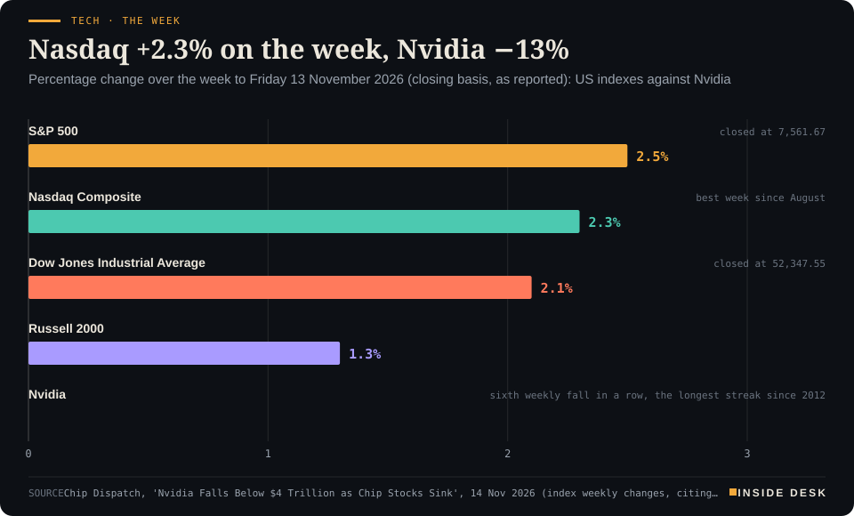
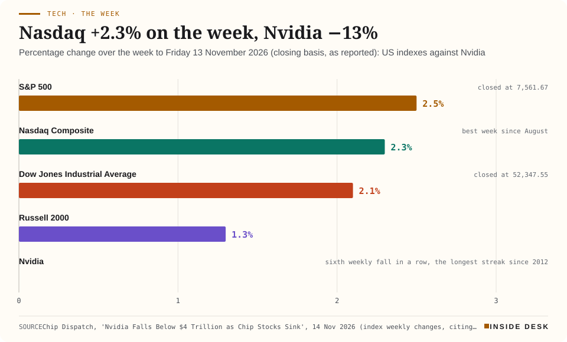
Bar chart of percentage changes in the week to Friday 13 November 2026: S&P 500 up 2.5 percent, Nasdaq Composite up 2.3, Dow Jones up 2.1, Russell 2000 up 1.3, while Nvidia fell 13 percent in its sixth straight weekly decline, as reported by Chip Dispatch and CNBC.
Source: Chip Dispatch, 'Nvidia Falls Below $4 Trillion as Chip Stocks Sink', 14 Nov 2026 (index weekly changes, citing the Associated Press for closes); CNBC, 'Nvidia stock suffers longest weekly losing streak since 2012', 13 Nov 2026 (Nvidia); retrieved 15 Nov 2026 · reported figures · CSV
Nebius, one of those neoclouds, reported its third quarter on Thursday, and its numbers are a small textbook. Revenue rose 571% to $981 million4. Capital spending rose 664% to $7.3 billion in the same quarter4. The company now expects about $27 billion of capital spending for 2026, above its earlier $20–25 billion range, and revenue at the low end of $3.0–3.4 billion4. Its first 2027 outlook is revenue of $12–13 billion and capital spending of $40–45 billion4.
Read those lines slowly and you see the shape of the whole build-out: spending runs ahead of revenue by a wide margin, on purpose, because capacity has to exist before it can be sold. The interesting part is how Nebius says it will pay. Prepayments on deals signed in the third quarter covered more than 100% of the related capital spending, up from 50–60% in the second; with loans backed by contracts with investment-grade customers, they should fund 75–85% of 2027 spending4. That is the dull machinery that matters: customers paying in advance, lenders lending against signed contracts. It is not hype. It is underwriting.
Its weakness was equally dull. The shortfall came from capacity at third-party sites that is now due in the first half of 2027; in New Jersey, it expects to deliver more than half of the capacity contracted with Microsoft by the end of the year and the rest in the second quarter of 20274. The contracts behind the delayed capacity remain in place, the company says4. The shares still fell; Chip Dispatch reported Nebius down nearly 17% at one point on Friday2. A delay is not a cancellation. But in a market paying 5% for ten-year money, two months is a cost.
The permit. Then there is the constraint no balance sheet can solve. …
Geo-economicsInside Desk · Sunday Magazine15 November 2026
Geo-economics · 2 min
Beijing calls Friday's first meeting candid, in-depth and constructive. It does not say what was agreed. The farm numbers say why that matters.
The machinery met before the leaders do. China and the United States held the first meeting of their new trade council by video link on Friday, China’s commerce ministry said on Saturday1. The council was agreed in May; Friday was its first sitting1. The White House says Donald Trump will meet Xi Jinping on Thursday on the sidelines of APEC in Shenzhen2.
The readout used the usual adjectives: “candid, in-depth and constructive” exchanges on tariffs, the reciprocal tariff arrangement, agricultural trade “and other issues of mutual concern”1,2. It did not say whether anything was agreed2. Both sides will keep using the council to “shorten the list of issues”, the ministry said, in the service of “a constructive China-U.S. relationship of strategic stability based on respect, fairness and reciprocity”1. That is a long phrase for a short readout. The useful word in it is “list”: a council that keeps one can be checked against it next time.
The central item is the one from September. At their eighth round of consultations, held in New York and Washington from 20 to 23 September, the two sides agreed to cut tariffs on about $30 billion of each other’s goods, with tariffs on around 90 per cent of the covered products to fall to most-favoured-nation rates1. Reuters describes it as a $60 billion package that includes roughly $17 billion of US farm goods China imported in 2024; it has yet to be finalised2.
The farm ledger shows the gap between agreement and delivery. China agreed to buy $17 billion of US farm goods a year through 2028, yet its purchases of US farm goods other than soybeans are on track for a seven-year low this year, according to a Reuters analysis of customs data2. Beijing calls the tariff cuts a prerequisite for buying more2. Each side, in other words, is waiting for the other’s paperwork.
For you: you don’t need to read Thursday’s handshake. Watch for a published tariff list with product codes and an effective date. That is when a summit stops being a photograph and starts showing up in invoices, freight bookings and the prices on the shelf.
Geo-economics · Short item · ePaper extra, added
Eurostat's figures to September show a surplus with the US shrinking by more than a third, and a deficit with China growing by a sixth.
Tariffs are argued about at podiums. They are measured in customs declarations. Eurostat’s data, updated on Friday and summarised by Expansión, give the first nine months of 20261.
To the United States: EU exports from January to September came to €383.5 billion, down 12.4 per cent on a year earlier, a fall of more than €54.5 billion1. Imports from the US rose almost 8 per cent to more than €292.3 billion1. The EU’s surplus with the US was €91.2 billion, 36.5 per cent smaller than the nearly €143.8 billion of the same period last year1. …
Geo-economics · Brief · ePaper extra, added
Six AIS-visible commercial ships crossed the Strait of Hormuz on Saturday: one inbound into the Gulf and five outbound, five of them cargo ships and one a small oil-products tanker of 12,000 tonnes deadweight with the declared destination AE JEA1. The seven-day average is 6.4 crossings a day, against a pre-crisis baseline of 84.81. Desk arithmetic: the week ran at about 7.5 per cent of normal traffic. One outbound bulk carrier declared Santos as its destination; the single inbound ship, a bulk carrier, declared Khalifa in the UAE1. IMF PortWatch’s own figures lag by several days1. Six crossings a day are not a trade route yet. They are a count worth keeping until they are.
Markets & MacroInside Desk · Sunday Magazine15 November 2026
Markets & Macro · 2 min
The Stoxx 600 gained 2.44% on the week, its best since early July, and closed at records on three of five days. Most of the work was done on Monday; the rest was holding on.
On Sundays this desk puts the week back in the order it happened. Europe’s total is tidy: the Stoxx Europe 600 rose 15.81 points, or 2.44%, to 664.14, its largest weekly gain since the week ending 3 July4. The order is less tidy, and more useful.
1. Monday did most of the lifting. The Stoxx 600 rose 1.26% to 656.52, snapping a two-day losing streak; it was still 0.60% short of its August record1. Desk arithmetic: Monday’s 8.19 points were just over half of the week’s 15.811,4.
2. Tuesday, a small step. Desk arithmetic from Wednesday’s figures: the index closed at about 658.32 on Tuesday, a rise of roughly 0.27%2.
3. Wednesday, the record. Up 0.72% to 663.05, a new record close, and the largest three-day gain since June2. Year to date the index was up 11.97%2.
4. Thursday, the nudge. Up 0.14% to 664.01, another record, four days up in a row, on the day Nvidia’s founder resigned3,11. In Frankfurt, the DAX set its own record close at 26,771.885.
5. Friday, flat and still counted. The Stoxx 600 added 0.13 points, or 0.02%, enough for a third record close and a fifth straight day up, its longest winning streak since August4. The DAX slipped 21.93 points but ended the week 3.60% higher at 26,749.95, its second-highest close ever5. The FTSE 100 finished 2.14% up at 10,902.56, 0.07% below its February record6; the CAC 40 gained 2.82%7.
Markets & Macro · Short item · ePaper extra, added
The S&P 500 gained 2.51% and broke its losing run. Tuesday brings Nvidia's first results without its founder; Thursday, Anthropic's shares are expected to start trading.
The S&P 500 rose 184.81 points, or 2.51%, last week to 7,561.67, its largest weekly gain since early August, and snapped a four-week losing streak1. It is still 3.29% below its 6 October record, and up 10.46% this year1. Friday itself was a 0.40% fall, the second down day in a row1.
The calendar now sets two exams. Nvidia reports after the US close on Tuesday, its first results since Jensen Huang resigned as chief executive and board member on Thursday; interim chief executive Colette Kress will take the call2. “That’s a Nvidia question, not an AI question,” said Cullen Rogers of Wedbush Fund Advisers2. On Wednesday evening Anthropic is expected to price its listing, and to start trading on the Nasdaq on Thursday as “ANT”, selling 825 million shares at $70 to $78 each2. Desk arithmetic: that is roughly $58 billion to $64 billion of stock.
Underneath both sits the rate question. …
Markets & Macro · Brief · ePaper extra, added
Goldman Sachs raised its 12-month target for the Stoxx 600 to 700 points from 695, Reuters reported via Investing.com1. The index closed Friday at a record 664.143. Desk arithmetic: the new target sits about 5.4% above that close. Citigroup, after the sharp sell-off in technology shares, cut its recommendation on US stocks and on global tech, and raised it for European equities, which it sees as less dependent on the AI boom, Investiční web reports2. The Stoxx 600 is already up 12.15% this year3. A target is a forecast with a firm’s name on it, not a promise. Nothing here is investment advice.
Politics & InstitutionsInside Desk · Sunday Magazine15 November 2026
Politics & Institutions · 2 min
The 2027 budget is settled without the chancellor's best-known promise. Over the weekend everyone repeated the promise. Nobody named the money.
The 2027 budget was agreed in the small hours of Friday. The electricity tax was not in it1. That gap ran through the whole weekend.
Friedrich Merz says the goal stands. He wants to cut the electricity tax to the European minimum, “from next year, in full”, as he put it on the edge of the EU meeting in Dublin, and he was due to address the CDU’s Schleswig-Holstein party conference in Neumünster on Saturday, where SPIEGEL expected him to have to say something about it1,2. Several minister-presidents of his party pressed for the cut as well, among them his host, Daniel Günther1,2.
The finance minister answers with a number. Lars Klingbeil says he is open in principle, but it needs “serious” counter-financing: the federal government would take in about €5.4 billion a year less1. DER SPIEGEL puts the sum needed at €5.2 billion2. Desk arithmetic: the two figures are €200 million apart, which is small next to the size of the hole and large next to anything already found to fill it. Even the Union’s own budget specialists doubt whether that money can still be found in the budget, SPIEGEL reports2.
The pressure inside the party is now on the record. A meeting of the Union’s parliamentary group on Wednesday turned into what SPIEGEL calls a reckoning, because the cut was left out of the deal with the SPD leaders, and the paper reports a “threat” from within the party’s own ranks to let the budget fail in the Bundestag at the end of November2. The decision is due at Tuesday’s coalition committee and could be added during the budget week1. The background is not getting easier: in the same overnight briefing SPIEGEL notes economists’ warnings of a severe budget crisis from 2028, after a 2027 budget shaped by record spending and more new debt2.
For you: the household gain depends on one dull document, the counter-financing table. A lower rate needs a matching line somewhere else, a cut, a levy or a reallocation, with a sum beside it. If Tuesday produces that line, the promise becomes a measure. …
Politics & Institutions · Short item · ePaper extra, added
The first official candidate for January's party conference wants the chair without a cabinet seat. That is a direct question to Lars Klingbeil.
Until Saturday the race for the SPD leadership had no runners. Then the former labour minister Hubertus Heil wrote to the party’s regional branches and executive: he will stand for one of the two chairs at the federal party conference in Bremen in mid-January, where the whole leadership is re-elected1.
SPD, Linke and Greens signed their coalition agreement for Mecklenburg-Vorpommern on Saturday evening at the Pomeranian State Museum in Greifswald, after all three party conferences approved it: unanimously at the SPD, with one abstention at the Greens1. The 133-page programme is titled “Zusammenhalt, Zuversicht, Zukunft”, cohesion, confidence, future1. Manuela Schwesig, head of government since 2017, wants to be re-elected in the Landtag on Monday; the coalition has 39 seats, the AfD, the only opposition party, 321. Desk arithmetic: a margin of seven seats. Three parties, one majority, and a 133-page contract to keep it together. In a state parliament that is the dull machinery doing its job.
Psychology & BehaviourInside Desk · Sunday Magazine15 November 2026
Psychology & Behaviour · 2 min
A Norwegian trial of guided online therapy in routine primary care found similar recovery rates and far less therapist time. It also missed its own bar. Both facts are in the paper, so both are here.
The Annex reads the paper behind the headline. This week’s paper is a randomised trial from the Norwegian Institute of Public Health, published in Internet Interventions and led by Marit Knapstad and Otto Robert Smith1. The headline says online therapy cuts therapist time. It does. The paper says something more careful as well.
Clause one: the setting. 390 adults seeking help for anxiety or mild to moderate depression at six primary care services were randomised to guided internet-based cognitive behavioural therapy or to usual treatment at Prompt Mental Health Care, Norway’s service modelled on England’s NHS Talking Therapies1. In the usual-care group, 78 per cent received individual face-to-face therapy1. The trial ran from October 2021 to December 20231. This is routine care, not a university clinic with hand-picked volunteers, which makes it more useful and messier.
Clause two: the result. Both groups improved markedly over six months1. Recovery was 56.1 per cent online and 58.9 per cent in usual care1. That looks close. But the researchers had set a strict threshold for showing online therapy was not meaningfully worse, and it did not meet that standard for depression or anxiety scores1. Only about half of participants completed the six-month questionnaire, which cut the study’s statistical power1. “Not shown to be non-inferior” is not the same as “shown to be worse”. It means the trial could not rule it out.
Clause three: the clock. Online therapy used about 46 per cent less therapist time per client, roughly 144 minutes against 2661. Desk arithmetic: 122 minutes saved per client, so the therapist hours that serve one usual-care client would serve about 1.8 online clients. For a waiting list, that ratio is the story.
Clause four: the small print. Early dropout was higher online, 10.4 per cent against 6.1 per cent1. Therapists reported using fewer techniques such as exposure exercises online, which the authors think may have limited benefits for some anxiety conditions1. …
Psychology & Behaviour · Short item · ePaper extra, added
An Irish trial of weight training for young women with high worry found large drops in depressive symptoms in both arms. The difference between the arms was not confirmed.
Researchers at the University of Limerick randomised 55 young women, average age about 22, who screened for analogue generalised anxiety disorder, a level of worry that meets questionnaire thresholds rather than a clinical diagnosis1. For eight weeks, after two weeks of familiarisation, one group lifted at 70 to 80 per cent of their one-repetition maximum, two sets of 8 to 12 repetitions of eight exercises, following WHO and American College of Sports Medicine guidelines1. The other did a “sham” version at 20 per cent1. The study appears in the Journal of Affective Disorders, publication dated 15 November1.
New research from the Ad Council and Surgo Health finds that twice as many young people report symptoms of depression or anxiety as their parents may recognise1. “When we ask young people directly, they tell us things even attentive parents can miss,” said Surgo Health chief executive Sema Sgaier1. Her tracker also asks what helps: time with friends, being active, getting outside, creative outlets1. The release comes with a campaign, and the campaign’s own figure is modest: parents aware of it were more likely to feel strongly confident about such conversations, 44 per cent against 30 per cent1. The advice is cheaper than any app. Ask, then listen longer than feels comfortable.
Energy & IndustryInside Desk · Sunday Magazine15 November 2026
Energy & Industry · 2 min
Germany's day-ahead power price fell by three fifths from Tuesday's record to Sunday. The generation figures show who took over the shift.
Sunday’s electricity in Germany and Luxembourg was bought on Saturday at an average of €139.70 per megawatt hour, the cheapest delivery day of the week1. The week began at €345.64 on Monday and set a record of €351.48 on Tuesday1. Desk arithmetic: from Tuesday to Sunday the daily average fell by €211.78, or about 60%. Against the previous Sunday, 8 November, at €242.13, it is €102.43 lower1.
Energy · PowerSunday €139.70, the week's cheapest dayGermany/Luxembourg day-ahead price, daily average by delivery day, € per MWh; week of 9 Nov from a record €351.48 on Tuesday to €139.70 on Sunday
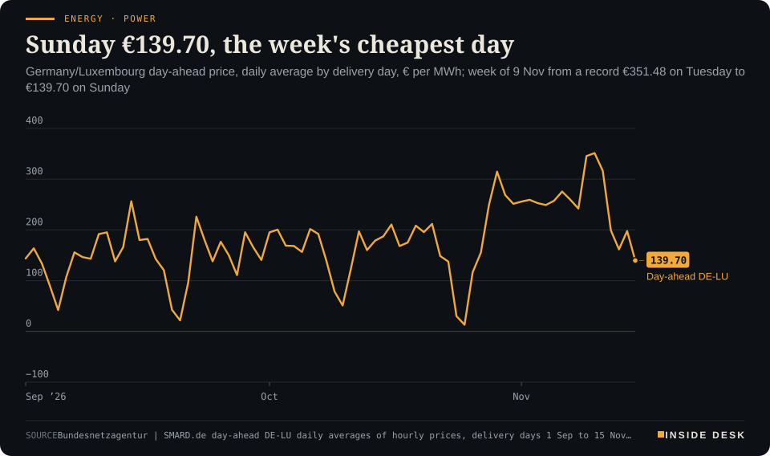
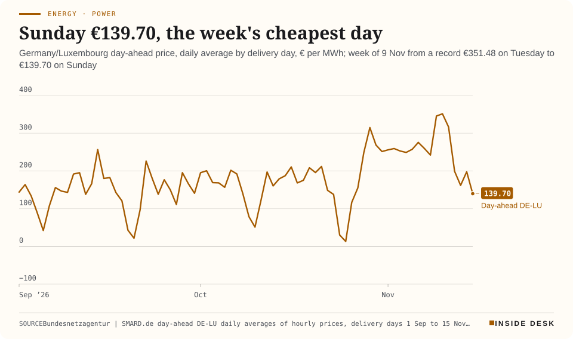
Line chart of the daily average German-Luxembourg day-ahead electricity price from 1 September to 15 November 2026, in euros per megawatt hour. In the week from Monday 9 November it reads €345.64 on Monday, a record €351.48 on Tuesday, €316.65 on Wednesday, €199.05 on Thursday, €161.74 on Friday and €197.72 on Saturday. The latest value is €139.70 for delivery on Sunday 15 November, the lowest of the week, €58.02 below Saturday and €102.43 below the previous Sunday, 8 November, at €242.13.
Source: Bundesnetzagentur | SMARD.de day-ahead DE-LU daily averages of hourly prices, delivery days 1 Sep to 15 Nov 2026 (Sunday 15 Nov €139.70, auction of 14 Nov), retrieved 15 Nov 2026, 09:20 CET · CC BY 4.0 · CSV
The shape of a cheap Sunday. The dearest hour on Sunday is 17:00, at €178.12, as lights come on and the sun is gone; the cheapest is 12:00, at €99.791. No hour clears below €99, so this is a cheaper day, not a giveaway one. The pattern is the familiar winter one: a dip at midday, a hump in the early evening1.
Who took the shift. SMARD’s generation data tell the story better than any commentary. …
Energy & Industry · Short item · ePaper extra, added
Brent fell 2.52% last week and 18.53% over two, its steepest two-week dollar fall since October 2008. The shipping risk has not gone; the pricing of it has changed.
Brent crude for January delivery settled at $95.84 a barrel on Friday, down $2.48, or 2.52%, on the week1. Over two weeks it lost $21.80, or 18.53%: the largest two-week fall in dollars since the week ending 10 October 2008, and the largest in percentage terms since April 20201. It is 19.02% below its 2026 high of $118.35, set on 31 March, and still 57.50% higher than at the start of the year1.
The week itself was not a straight line. …
Energy & Industry · Brief · ePaper extra, added
EU carbon permits on ICE fell 2.64% on Friday to €87.99 a tonne, but ended the week 1.66% higher, insigtX reported1. Each permit covers a tonne of CO2, so it is a running cost for every coal and gas plant in the system. In Germany, lignite plants produced about 316 GWh on Tuesday and about 188 GWh on Friday, as the wind picked up, SMARD’s provisional data show; hard-coal output fell from about 136 GWh on Wednesday to about 66 GWh on Saturday2. Desk arithmetic: lignite output on Friday was about 40% below Tuesday’s. The permit price rose; the plants that need permits most ran less. That is the mechanism working as designed. Nothing here is investment advice.
Money, FX & CommitteesInside Desk · Sunday Magazine15 November 2026
Money, FX & Committees · Podium vs Print · 2 min
On Friday the Bundesbank president said the ECB will probably have to raise rates again. Hours earlier, Eurostat counted the euro area's workers and found none added in three months.
Podium
“If the situation stays as it is, it seems highly probable that we'll have to act again.”
Joachim Nagel, President of the Deutsche Bundesbank and member of the ECB Governing Council, keynote at the 79th Siemens Bankers Conference in Munich, Friday 13 November 2026
Print0.0%
Euro-area employment unchanged on the quarter in July to September, after +0.1%; GDP +0.4%, with France at -0.1% and Italy at 0.0%.
Eurostat, flash estimate of euro-area GDP and employment, Friday 13 November 2026
The podium. In Munich on Friday, Bundesbank President Joachim Nagel set out the case plainly. Euro-area inflation stood at about 2% when the year began and is now at 4%, he said; oil costs around a third more than before the Iran war began, European gas almost three times as much1. The ECB raised rates in June and September and held at 2.5% two weeks ago1. Then the line that moved the wires: “If the situation stays as it is, it seems highly probable that we’ll have to act again”1,3. In Riga on Wednesday he had said “we will do what is necessary again”4; on Friday he put a probability on it.
The print. On the same day Eurostat published its second look at the third quarter. Euro-area GDP rose 0.4% on the quarter, after 0.6% in the spring, and 1.3% on the year2. Employment was unchanged on the quarter, after rising 0.1% in each of the three quarters before2. France’s output fell 0.1%, Italy’s was flat, Germany’s grew 0.2%; Spain grew 0.6%2. The United States, for comparison, grew 0.8%2.
The gap. It is real, but it is not a contradiction. Nagel did not hide the print: “So far, the economy has proved resilient,” he said, citing the same 0.4%1. His argument is that higher policy rates “won’t produce more oil or gas”, but can stop energy prices feeding into wages and price-setting1. He also said underlying inflation and wage growth have so far been “broadly stable”1. Desk arithmetic: put the two together and the ECB is weighing a hike against an economy whose second- and third-largest members, France and Italy, produced no growth between them last quarter2.
What the print does not say. A flat head count is not a falling one; year on year, employment is still up 0.4%2. And the flash covers states making up 97% of euro-area output, with revisions due on 7 December2. It is a reading, not a verdict.
For you. The podium tells you where the rate on your next loan or deposit is more likely to go. …
Money, FX & Committees · Short item · ePaper extra, added
Washington's tariffs make the news. The Bundesbank president spent part of Friday on the barriers nobody has to announce, because they are already at home.
Most of Friday’s attention went to what Joachim Nagel said about interest rates. The longer half of his Munich speech was about something duller and, for your income, possibly bigger: the cost of selling across Europe’s own borders1.
The outside pressure first. By the Bundesbank’s estimates, the average US tariff rate has risen from 2.3% in 2024 to almost 12%, a level last seen in the early 1940s1. The United States and China together take roughly one in every seven euros of Germany’s goods exports1.
Then the inside. Nagel cited an IMF study estimating the cost of trading across EU borders as equivalent to tariffs of around 44% on goods and 110% on services1. “Those are barriers we impose on ourselves,” he said. “And they are ours to remove”1. He listed the plumbing: nine member states still miss the 10% electricity-interconnection target set for 2020; three non-European providers hold more than 70% of Europe’s cloud market; Europe hosts an estimated 5% of the world’s AI computing capacity against almost 80% in the US1.
There is some progress. …
Money, FX & CommitteesInside Desk · Sunday Magazine15 November 2026
Money, FX & Committees · Brief · ePaper extra, added
German exports rose 2.0% in September to €141.1 billion, calendar and seasonally adjusted, and imports 4.2% to €125.5 billion, leaving a surplus of €15.6 billion, Destatis reported1. The table underneath is less tidy. Exports to China fell 5.2% on the month to €5.5 billion, while imports from China rose 1.6% to €17.3 billion, making it Germany’s largest source of imports1. Desk arithmetic: Germany bought about €3.15 of Chinese goods for every euro it sold there, an €11.8 billion gap in one month. The United States remained the largest buyer, at €13.4 billion1. The single market did the heavy lifting: €80.8 billion of exports went to EU countries, up 3.5%1. Nothing here is investment advice.
Ordinary & Inherited LifeInside Desk · Sunday Magazine15 November 2026
Ordinary & Inherited Life · 2 min
Six weeks before Christmas, the retailers' own survey says you will spend almost exactly what you spent last year. The interesting figures are the ones underneath: who is cutting, who is not, and where the money goes.
The Ordinary Ledger takes the week’s big numbers and turns them into lines on a household budget. This Sunday the big number is small, and that is the news: on average you plan to spend €262 on Christmas presents this year, against €263 last year, according to a survey of more than 2,000 people by the Handelsblatt Research Institute for the retail association HDE1.
Who is cutting. More than half of people plan to spend the same as last year, 10% plan to spend more and 24% plan to spend less1. Desk arithmetic: cutters outnumber spenders by more than two to one, and the average still barely moves. That is what a stable budget looks like from the inside: a minority tightening, a smaller minority loosening, and most people buying roughly the same list for roughly the same people.
What the shops expect. The retailers are gloomier than their customers. In a separate HDE survey of 300 retail companies, 56% of non-food retailers expect a worse or much worse Christmas than last year1. Still, the association forecasts nominal sales up 2% in November and December, to €129.2 billion in total1. HDE president Alexander von Preen said customers “sind in Weihnachtsstimmung” (are in the Christmas mood) and are planning stable spending on presents1.
Note the word nominal. A 2% rise in euros, with a flat present budget per person, is not a story of more parcels under the tree. It is mostly a story of prices: of energy, staff and, in the HDE’s own words, “ausufernder Bürokratie” (runaway bureaucracy) on the retailers’ side of the counter1.
Where the money goes. Online is the growth line. The HDE expects online Christmas sales to rise 4.1% to €23.1 billion1. Desk arithmetic: that is about 18% of the €129.2 billion forecast for the two months, and it is growing twice as fast as the whole.
What you can do with this. The ledger’s advice is not to spend less or more. It is to write the number down. A budget of €262 that you set in November and check in December is a decision; a budget that you discover on your card statement in January is an accident. If you are among the 24% who plan to cut, the cheapest way is the oldest: fewer, better presents, bought before the last weekend, when the choice is wider and the delivery promise firmer.
Ordinary & Inherited Life · Short item · ePaper extra, added
Not every New Year letter is a price rise. The minimum wage goes up by law, and the mini-job ceiling follows it automatically.
This week’s ledgers were full of 1 January letters about gas, power and parcels. Here is a 1 January line that runs the other way. The statutory minimum wage rises from €13.90 to €14.60 gross an hour on 1 January 2027, as set in the fifth minimum-wage adjustment regulation1.
Because the mini-job ceiling is tied to the minimum wage, it moves too, without anyone having to vote on it again. …
Ordinary & Inherited Life · Brief · ePaper extra, added
The week in the cellar tank: by Friday morning heating oil cost a little over €1.65 a litre on the German average, back where it had been on Thursday morning after a dip to just over €1.64 on Thursday evening, HeizOel24 reported1. Since the start of November prices have fallen by about eight cents a litre1. Yet the November average so far is just under €1.69, making it the second-dearest month of the year to date1. Desk arithmetic: on a 3,000-litre order, eight cents is about €240. Even in one morning the spread was wide: Bremen up just over three cents, Thuringia down almost 0.8 cents1. Compare quotes before you compare headlines.
Tech & ComputeInside Desk · Sunday Magazine15 November 2026
Seven chip and cloud companies have agreed to buy Anthropic shares at the offering price. In a week when AI money was nervous, that is the clause that tells you who is underwriting whom.
Anthropic is offering 825 million Class A shares at $70 to $78 each, of which 801,351,354 are new shares and the rest are sold by existing holders, and it has applied to list on Nasdaq as “ANT”2. People familiar with the plan told CNBC it intends to price on 18 November and trade on 19 November, with about 20% of the shares aimed at retail investors, against a typical 5% to 10%1.
The headline number is the valuation: up to $1.405 trillion fully diluted at the top of the range, up from $965 billion in a May funding round1. The more useful number sits a paragraph lower. AMD, Broadcom, Google, Micron, Microsoft, Nvidia and TSMC have agreed to buy $26 billion of Class N stock in a private placement at the IPO price, shares that will not be subject to underwriters’ lock-ups1.
Read that list again: several of these names make the chips, memory and cloud capacity that AI labs run on. That is not sinister; suppliers have financed their customers for as long as there have been invoices. But it means part of this deal is a supply chain buying a seat at its customer’s table, in the same month that the AI trade was being repriced.
The filing’s own figures are the other half of the story: $33.24 billion of revenue in the nine months to September, and a $104 billion net loss, most of it from fair-value changes on convertible notes and derivatives1. Run-rate revenue was about $81 billion at the end of October1. Price the revenue, footnote the loss. Nothing here is investment advice.
Tech & Compute · Brief · ePaper extra, added
On 3 November, US voters approved 27 local measures limiting or opposing data-centre development and defeated 13 that favoured it, Ballotpedia counts1. The approved list includes five full bans, twelve partial bans and three six-month moratoriums, all of the moratoriums in Maine1. In Perry, Ohio, hyperscale developers seeking certain tax incentives must now provide financial guarantees to the community1. The only exception among 41 contests was Harwood, North Dakota, where voters rejected a review requirement1. Six earlier local votes also went against development, and three more come in December, in Clarksville, Arkansas, and Mandan, North Dakota1. Compute is a product; a site is a negotiation.
Health & CareInside Desk · Sunday Magazine15 November 2026
Health & Care · 2 min
The diabetes numbers this week were not about a cure. They were about a blood test that never happens, and the clinic that would have to do it.
World Diabetes Day fell on Saturday, and the most useful figure published around it was not about a new drug. The International Diabetes Federation’s Atlas estimates that 589 million adults aged 20 to 79 were living with diabetes in 2024, and that about 43 per cent of them, or 252 million, did not know it1. Nearly nine in ten of those undiagnosed live in low- and middle-income countries1.
The target is clear and dull, which is a compliment. WHO member states have agreed that at least 80 per cent of people with diabetes should be diagnosed by 20302. The IDF puts today’s share at 57 per cent1. Its preliminary analysis says about 134 million additional diagnoses would be needed, roughly 89,000 every day from this World Diabetes Day to the end of 20301. That is not a research problem. It is an appointments problem.
The IDF’s new survey shows where the queue forms. It asked 2,411 adults aged 25 to 64 in Brazil, India, Kenya, Saudi Arabia, Spain and the United States, all with known risk factors and no diagnosis1. 84 per cent agreed a risk check was worthwhile; only 15 per cent thought they were likely to develop type 2 diabetes1. 67 per cent wrongly believed pre-diabetes usually comes with noticeable symptoms1. Fear of the result was the most cited barrier at 28 per cent, cost at 26 per cent, getting an appointment at 20 per cent1. The IDF itself warns these samples are not nationally representative1.
Across the Americas, PAHO counts 112 million adults with diabetes, about 13 per cent of the adult population, and 43 million people aged 30 and older with diabetes who receive no treatment2. “We need to strengthen primary health care to detect the disease as early as possible,” said PAHO director Jarbas Barbosa2. Note the order in his sentence: detection, then care. A diagnosis without follow-up is a letter nobody answers.
The bill is already being paid. The IDF estimates diabetes-related health spending exceeded US$1 trillion worldwide in 20241. …
Health & Care · Short item · ePaper extra, added
The FDA approved a new perioperative combination this week. The trial is strong, and its side-effect line deserves the same attention as its headline.
On Friday the US Food and Drug Administration approved durvalumab (Imfinzi) with enfortumab vedotin before surgery, followed by durvalumab alone after bladder removal, for adults with muscle-invasive bladder cancer who cannot take or have refused cisplatin chemotherapy1. Up to half of such patients are ineligible for cisplatin, often because of kidney function, and for them the standard has been surgery alone1.
The evidence comes from the VOLGA phase III trial, which randomised 695 patients at 182 centres in 25 countries1. In a planned interim analysis, the combination cut the risk of recurrence, progression, missed surgery or death by 49 per cent against the comparator (hazard ratio 0.51)1. An estimated 64 per cent were alive and event-free at two years, against 45 per cent1. The risk of death fell by 42 per cent; 78 per cent were alive at two years, against 69 per cent1.
Now the other column. Grade 3 and 4 adverse events of any cause occurred in 64 per cent of patients on the combination and 44 per cent in the comparator arm1. Patient-reported quality of life was maintained after surgery, the company says1. Desk arithmetic: that is 20 points more serious side effects for 19 points more patients alive and event-free at two years. Both numbers belong in the conversation between patient and oncologist.
The source is the manufacturer’s release, and the trial lead quoted has disclosed financial interests related to AstraZeneca1. Applications are under review in the EU and Japan1. A good trial is the start of a decision, not the end of one.
Health & CareInside Desk · Sunday Magazine15 November 2026
Health & Care · Brief · ePaper extra, added
Germany’s long-term care insurance will draw money from an additional federal loan for the first time this month, the health ministry told dpa; the amount is not yet fixed1. October was covered by €522 million left over from the original €3.2 billion loan for 20261. The Bundestag budget committee approved up to €700 million more in early October, paid out month by month as needed1. The reason is plain: spending rose faster than assumed because the number of people needing care keeps growing1. For 2027, minister Carsten Linnemann’s savings package is meant to raise €6.25 billion against an expected €7.6 billion shortfall1. Desk arithmetic: that leaves about €1.35 billion uncovered. The care commission reports by the end of January1.
Security & OrderInside Desk · Sunday Magazine15 November 2026
Security & Order · 2 min
In 24 hours the Kremlin went from asking what Europe could contribute to saying it would not choose Europe's negotiators. The table is bigger. The demands on it are not smaller.
On Friday the Kremlin’s line on a European delegation came with a condition attached. On Saturday it came without one. “We cannot and do not want to set conditions for their negotiating team. This is a completely wrong way to put it,” Kremlin spokesman Dmitry Peskov told Russian media1. Euronews reads it as the first signal that Moscow would not oppose European representatives at the table, after months of saying they had “no business” there1. Peskov still wants to talk to the Europeans first, to see “to what extent their position could potentially contribute”1.
The chair now has names on it. EU leaders agreed on Friday that Europe would be represented by Britain, France, Germany, Italy, Poland and the bloc’s institutions1. Those five countries have also signalled readiness to send troops to a “coalition of the willing” in the event of a ceasefire3, which is exactly why their presence matters to Moscow and why it was so long refused.
Washington’s envoys have changed job description. “Our focus now is on facilitating direct engagement between Moscow and European partners and preparing the agenda for the next round of trilateral talks,” Jared Kushner wrote on Saturday, after he and Steve Witkoff had met Zelensky and Putin separately following two days in Abu Dhabi without a ceasefire breakthrough2. He called NATO a “critical pillar” of European security and of “credible” guarantees for Ukraine2. Emmanuel Macron, in a long post the same day, said Europe must “state clearly” what it wants for the post-war period, “including to the Russians”3.
Now the part a friendlier tone does not change. The Washington Post, citing Russian negotiating points it obtained, reports that in this week’s talks Russia “returned to hard-line ultimatums” it had issued to NATO and the United States before the 2022 invasion4. A softer voice on who sits down is not a softer position on what is signed.
For you: watch the paperwork, not the adjectives. …
Security & Order · Short item · ePaper extra, added
October was the worst month for shipping incidents since the war began. On Saturday, Iran said three more tankers had hit mines.
Wars are counted in missiles and ministers. The UN counted crews. At least 25 seafarers have been killed in and around the Strait of Hormuz since the war on Iran began in February, assistant secretary-general Khaled Khiari told the Security Council on Friday, with figures running to 11 November1. “This situation cannot be allowed to become the new normal,” he said1.
Security & Order · Brief · ePaper extra, added
“The Americans raised the question: ‘What if Ukraine joins NATO? Would Ukraine withdraw from Donbas?’” President Zelensky told journalists on Friday, describing the Abu Dhabi talks. “This was the first time this issue had been raised”1. Donbas, Donetsk and Luhansk oblasts, has been partly occupied since 2014 and Russian forces have not managed to capture all of it1. US envoy Jared Kushner said on Saturday that “several new ideas” had emerged and were being explored, some of which “may lead to breakthroughs directly”1. A question is not an offer, and an offer is not a ratified accession. Keep the three apart.
Climate & WeatherInside Desk · Sunday Magazine15 November 2026
Climate & Weather · 2 min
COP31 pauses on Sunday with a presidency summary on the table and a fight over whether there should be a final political text at all. Monday is when paper replaces reflections.
Sunday is the rest day in Antalya, and the delegates go into it holding a document that insists on what it is not. On Friday the COP31 presidencies, Türkiye as host and Australia steering the negotiations, published a “summary of reflections” on a possible cover decision1. The presidency stressed that it is “not intended to reflect consensus, nor the strength or prevalence of views expressed”1. It does not say which country proposed what1. Read it as an inventory, not an invoice.
The inventory is interesting. It includes the “transition away from fossil fuels in energy systems”, the wording agreed at COP28 in Dubai and missing from the final decisions in Baku and Belém1. It floats efforts to limit the “magnitude and duration” of warming beyond 1.5°C, raising electricity’s share of final energy use to 35 per cent by 2035, and welcoming roadmaps on moving away from fossil fuels and on halting deforestation1. A list is cheap. What matters is which lines survive a text that needs the consent of every country present1.
The deeper argument is whether there should be a cover decision at all. Some large emerging economies say it is being pushed by the presidencies rather than by parties; Russia and the Arab Group are among those who say there is no mandate for one1. The European Union has warned there is little political appetite for new funding pledges in Antalya1. “The big question is what can survive that test of opposition,” said Alden Meyer of E3G1.
There is also a quieter dispute about the calendar of science. Some countries want the next major IPCC assessment ready for the global review of progress in 2028; Saudi Arabia, India and China have argued for 2029, saying more time is needed to include research from developing countries1. That sounds procedural because it is. Procedures decide what evidence is on the table when the stocktake begins.
Climate & Weather · Short item · ePaper extra, added
The DWD leans mild for the early winter and then tells you, in its own words, how little to trust the rest.
Most seasonal outlooks are sold on their headline. Germany’s weather service sells its own on the caveats, which is why it is worth reading. The DWD’s seasonal climate outlook, dated 19 October and covering November to March, sees a “moderate tendency” of 69 per cent for a warmer early winter, November to January, than the 1991–2020 average1. Warmer here means a three-month mean above 3.2°C, and the DWD rates the forecast quality for that period as relatively good1.
Then the confidence falls away. …
Climate & Weather · Brief · ePaper extra, added
Prolonged rain in central Vietnam left 2,734 houses inundated in Gia Lai and Dak Lak as of 17:00 local time (11:00 CET) on 12 November, and 1,887 households were evacuated from flood and landslide risk areas from Thanh Hoa to Dak Lak1. Parts of Dak Lak saw 80 to 200 mm in a day, some places more than 300 mm; two people were injured in Hue1. Inland, the Central Highlands coffee belt had only light rain, traders told Reuters, and harvesting continued, if slowly2. Farmers sold beans at 83,200 to 83,800 dong a kilo, against 83,000 to 84,000 a week earlier2. “We probably won’t see significant volumes reaching the market until next month,” one trader said2. Weather news and price news are not always the same story.
Weekend readingInside Desk · Sunday Magazine15 November 2026
Weekend reading
The 2026 Ledger
The year so far, month by month, in the order the invoices arrived.
3 January 2026 · Geo-economicsA president removed, a barrel unimpressedVenezuela changed hands over a weekend. The oil market read the supply sheet and went back to its glut. It was right about Venezuela, and about nothing that came next.
20 February 2026 · Politics & InstitutionsThe court sends the invoice backSix justices said a tariff is a tax, and taxes belong to Congress. The refund goes to whoever signed the customs entry, which is rarely the person who paid the higher price.
March 2026 · Energy & IndustryThe month a strait became a priceTwenty million barrels a day stopped moving, and the world's emergency cupboard opened wider than ever before. Both facts were true. Only one of them was a solution.
14 April 2026 · Markets & MacroA reference forecast is a hope with a footnoteThe IMF did not publish a baseline in April. It published a reference case and said, in plain print, that the world was drifting away from it. Read the footnote first.
22 May 2026 · Money, FX & CommitteesA new chair, the same arithmeticThe Federal Reserve changed its chair in the middle of an energy shock. If you expected the new face to bring cheaper money, the committee's next four months are the answer.
11 June 2026 · Money, FX & CommitteesFrankfurt raises into a supply shockThe textbook says look through an energy shock. The ECB chose not to, for the first time in this cycle, and said exactly why. The interesting word was 'robust'.
14 July 2026 · Security & OrderSixty days was the honest clauseA June memorandum promised safe passage through Hormuz, free of charge, for sixty days only. The price fell as if the strait had reopened. It had reopened on paper.
August 2026 · Geo-economicsSix months, five ships a dayHalf a year into the war, the strait carried a twentieth of its old traffic. The world adapted around it, by pipeline, by detour and by drawing down the cupboard. The cupboard was the part with a bottom.
10–16 September 2026 · Money, FX & CommitteesThe bypass breaks, both banks hikeIn one week the pipeline that carried Saudi oil around Hormuz was hit, the ECB raised rates and the Fed did the same. The Fed decided on the very day the ECB's increase took effect. The tank had made the argument for both.
13 October 2026 · Markets & MacroResilience is an inventorySix months after April's warning, the IMF's growth number had not moved and its inflation number had. The Fund's own explanation is a list of things that run down.
The week in desk comments
One line from each desk. Tap to read the piece behind it.
Tech & Compute
Markets & Macro
Geo-economics
Politics & Institutions
Psychology & Behaviour
Energy & Industry
Money, FX & Committees
Ordinary & Inherited Life
Health & Care
Security & Order
Climate & Weather
Data spreadInside Desk · Sunday Magazine15 November 2026
The week in data
Interactive: hover or tap for values, switch series on and off, change the time range.
Energy · PowerSunday €139.70, the week's cheapest dayGermany/Luxembourg day-ahead price, daily average by delivery day, € per MWh; week of 9 Nov from a record €351.48 on Tuesday to €139.70 on Sunday
Line chart of the daily average German-Luxembourg day-ahead electricity price from 1 September to 15 November 2026, in euros per megawatt hour. In the week from Monday 9 November it reads €345.64 on Monday, a record €351.48 on Tuesday, €316.65 on Wednesday, €199.05 on Thursday, €161.74 on Friday and €197.72 on Saturday. The latest value is €139.70 for delivery on Sunday 15 November, the lowest of the week, €58.02 below Saturday and €102.43 below the previous Sunday, 8 November, at €242.13.
Source: Bundesnetzagentur | SMARD.de day-ahead DE-LU daily averages of hourly prices, delivery days 1 Sep to 15 Nov 2026 (Sunday 15 Nov €139.70, auction of 14 Nov), retrieved 15 Nov 2026, 09:20 CET · CC BY 4.0 · CSV
Energy · PowerSaturday €197.72, up from Friday's €161.74Germany/Luxembourg day-ahead electricity price, daily average by delivery day, € per MWh
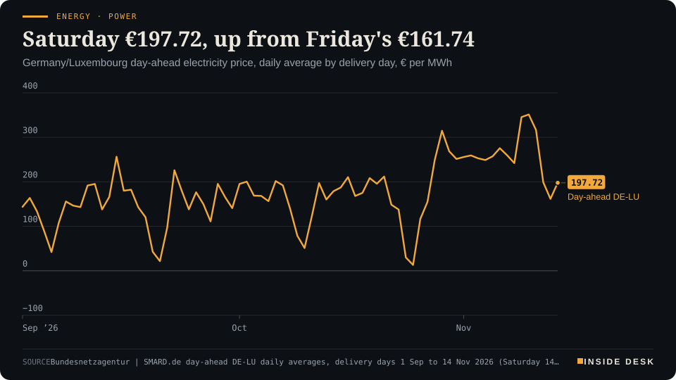
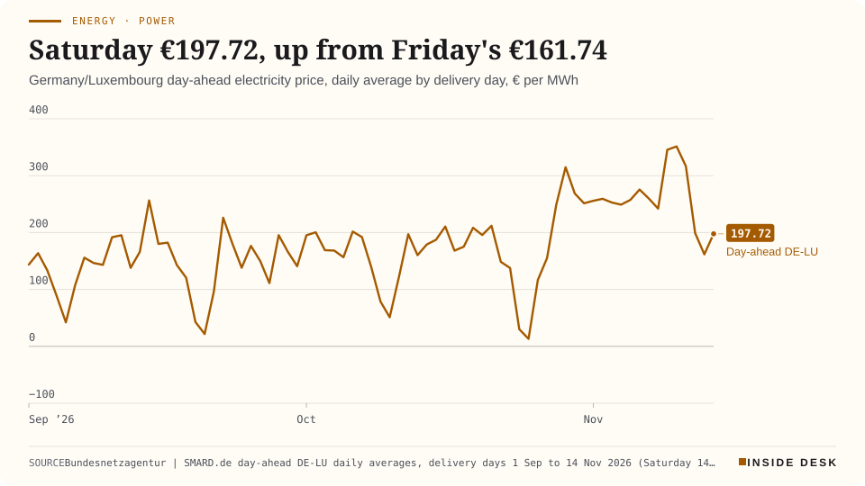
Line chart of the daily average German-Luxembourg day-ahead electricity price from 1 September to 14 November 2026, in euros per megawatt hour. It falls to €13.12 on Sunday 25 October, climbs to €314.85 on Thursday 29 October and stays between €242.13 and €275.64 from 2 to 8 November. In the week of 9 November it reads €345.64 on Monday, a record €351.48 on Tuesday, €316.65 on Wednesday, €199.05 on Thursday and €161.74 on Friday. The latest value is €197.72 for delivery on Saturday 14 November, €35.98 above Friday and €62.11 below the previous Saturday, 7 November, at €259.83.
Source: Bundesnetzagentur | SMARD.de day-ahead DE-LU daily averages, delivery days 1 Sep to 14 Nov 2026 (Saturday 14 Nov €197.72, auction of 13 Nov), retrieved 13 Nov 2026, 16:31 CET · CC BY 4.0 · CSV
Data spreadInside Desk · Sunday Magazine15 November 2026
Energy · PowerFrom €345.64 to €161.74: the week more than halvedGermany/Luxembourg day-ahead electricity price, daily average by delivery day, € per MWh
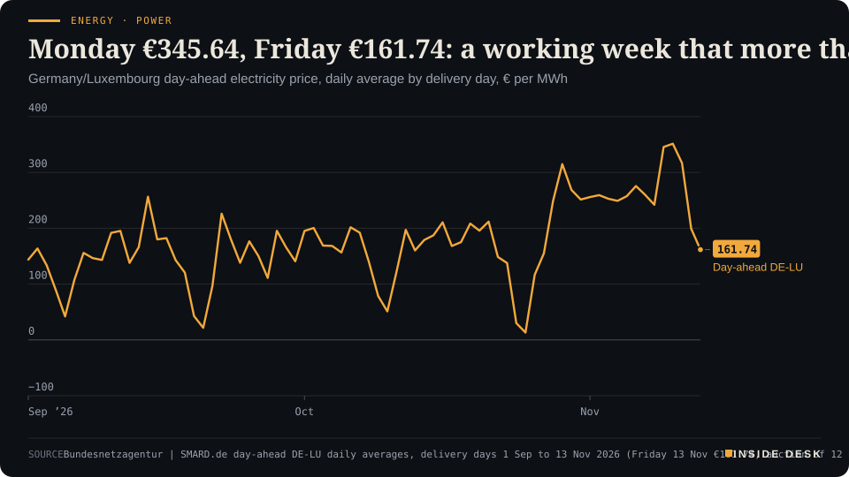
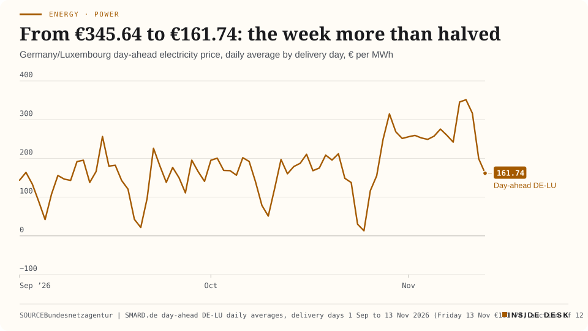
Line chart of the daily average German-Luxembourg day-ahead electricity price from 1 September to 13 November 2026, in euros per megawatt hour. It falls to €13.12 on Sunday 25 October, climbs to €314.85 on Thursday 29 October, and stays between €242.13 and €275.64 on every delivery day from 2 to 8 November. In the week of 9 November it reads €345.64 on Monday, a record €351.48 on Tuesday, €316.65 on Wednesday and €199.05 on Thursday. The latest value is €161.74 for delivery on Friday 13 November, €37.31 below Thursday, €189.74 below Tuesday's record and the lowest delivery day since €155.12 on Tuesday 27 October.
Source: Bundesnetzagentur | SMARD.de day-ahead DE-LU daily averages, delivery days 1 Sep to 13 Nov 2026 (Friday 13 Nov €161.74, auction of 12 Nov), retrieved 13 Nov 2026, 05:17 CET · CC BY 4.0 · CSV
Energy · PowerFriday at €161.74: lower again, after Thursday's €199.05Germany/Luxembourg day-ahead electricity price, daily average by delivery day, € per MWh
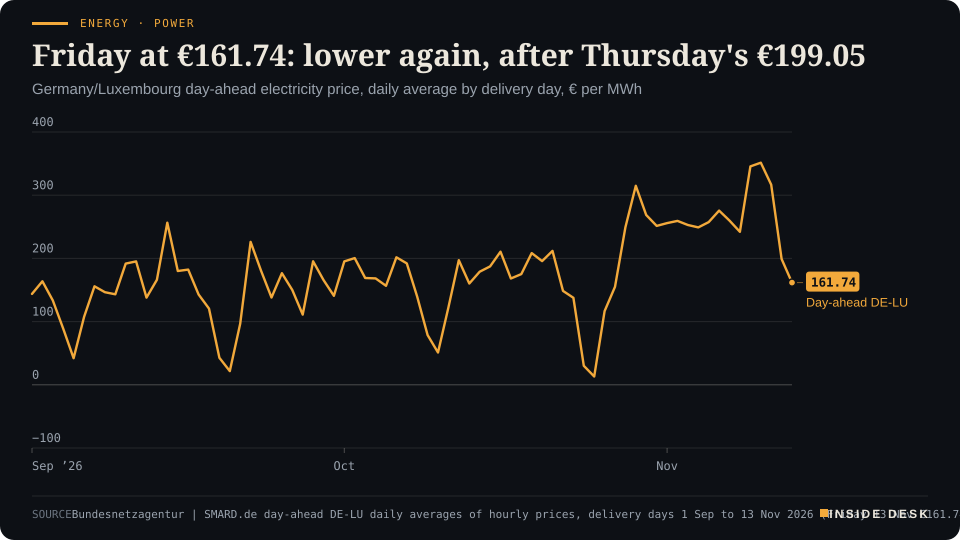
Line chart of the daily average German-Luxembourg day-ahead electricity price from 1 September to 13 November 2026, in euros per megawatt hour. It falls to €13.12 on Sunday 25 October, climbs to €314.85 on Thursday 29 October and stays between €242.13 and €275.64 from 2 to 8 November. It reaches a record €351.48 on Tuesday 10 November, eases to €316.65 on Wednesday 11 November and drops to €199.05 on Thursday 12 November. The latest value is €161.74 for delivery on Friday 13 November, €37.31 below Thursday and the lowest delivery day since €155.12 on Tuesday 27 October.
Source: Bundesnetzagentur | SMARD.de day-ahead DE-LU daily averages of hourly prices, delivery days 1 Sep to 13 Nov 2026 (Friday 13 Nov €161.74, auction of 12 Nov), retrieved 12 Nov 2026, 16:31 CET · CC BY 4.0 · CSV
Latest values
Series
Value
Date
Chart
Day-ahead DE-LU
139.70
15 Nov 2026
Sunday €139.70, the week's cheapest day
Day-ahead DE-LU
197.72
14 Nov 2026
Saturday €197.72, up from Friday's €161.74
Day-ahead DE-LU
161.74
13 Nov 2026
From €345.64 to €161.74: the week more than halved
Day-ahead DE-LU
161.74
13 Nov 2026
Friday at €161.74: lower again, after Thursday's €199.05
Last data point of the main series in each chart above, from the Inside Desk data archive. Sources under each chart.
Back pageInside Desk · Sunday Magazine15 November 2026
Before you close the tab
The day in one sentence
The week's loud numbers were about chips and oil; the quiet ones were six cents off a litre of petrol and an autumn in which fewer people died than usual.
One thing you can do this week
Pick one recurring bill this week, the phone contract, the streaming service or the insurance that renews in January, and write down three things on a single line: what it costs a month, the date it renews and the date by which you would have to cancel. Do nothing else with it. The point is not to cut anything; it is to know which of your invoices runs on autopilot.
A habit, not advice.
What went right
Germany's statistics office counted fewer deaths this autumn than usual. On its provisional figures, published on 10 November, mortality was 2% below the median of 2022 to 2025 in August, 6% below in September and 9% below in October, after a summer in which heat waves had pushed the late-June week 36% above that median 1. The figures are provisional and extrapolated from incomplete registrar data, which Destatis says plainly 1. A registrar's office, a weekly count and an honest footnote: that is how a country learns it had a quieter autumn.
In euros at home
ADAC's survey on Wednesday put Super E10 at €1.978 a litre, about 6.3 cents cheaper than a week earlier and below two euros for the fifth day running, and diesel at €2.217, 4.3 cents cheaper 2. On Thursday's daily average, dpa-AFX reported E10 at €1.949 and diesel at €2.188 3. Desk arithmetic: on a 50-litre tank, Wednesday's weekly fall is about €3.15 for petrol and €2.15 for diesel. ADAC says diesel prices are still not fully explained by wholesale prices, the fuel discount and crude, and sees room for further cuts 2.
Desk arithmetic on the cited figures.
Small words
Median
Line up all the values from smallest to largest and take the one in the middle. Statisticians like it because one extreme year, a pandemic winter or a record heat wave, cannot drag it around the way it drags an average. When Destatis says October deaths were 9% below the median of 2022 to 2025, it is comparing this October with the middle of the last four, not with their average.
Commentary for information only. Not investment, legal, tax, medical or political advice. Inside Desk is free and reader-supported. Every number is sourced in the piece it appears in.
This issue has been updated.
All articles in this edition
Tech & Compute · 6 min read
The Sunday long read: Nvidia lost its founder and $657 billion. On Tuesday it sends the invoice
The week's AI story was told in share prices, scandal and a chief executive's exit. The story that will outlast it is written in revenue lines, prepayments, colocation dates and town-hall ballots, and the first of those documents arrives on Tuesday.
If you followed the technology pages this week, you followed a man. Jensen Huang, who co-founded Nvidia and led it for 33 years, resigned on Thursday after two extramarital affairs were made public, one with an alleged Chinese spy and one with an employee1. The board named the finance chief, Colette Kress, interim chief executive while it searches for a successor1. It was the kind of story that writes its own headlines, and it wrote a great many.
This Sunday is a good moment to put the man down and pick up the paperwork. Not because the scandal does not matter, but because the thing that the AI build-out actually runs on was never his biography. It runs on documents: order books, revenue lines, loan agreements, prepayments, permits and power contracts. Those had a busy week too, and almost nobody put them on a front page.
The price. Start with what the market did, because it is the loudest number. Nvidia’s shares fell 13% over the week, the most since April 2025, in a sixth straight weekly decline, the longest losing streak since 20121. Since the slide began in early October the company has lost 30% of its value, roughly $1.7 trillion of market capitalisation, and it has slipped behind Apple1. On Friday it closed at $162.85, below $4 trillion in market value, after shedding $657 billion in the week, Chip Dispatch reported2,3.
Now look at the chart, because the price of one company is not the price of the industry, and certainly not the price of the market.
Tech · The weekNasdaq +2.3% on the week, Nvidia −13%Percentage change over the week to Friday 13 November 2026 (closing basis, as reported): US indexes against Nvidia
Bar chart of percentage changes in the week to Friday 13 November 2026: S&P 500 up 2.5 percent, Nasdaq Composite up 2.3, Dow Jones up 2.1, Russell 2000 up 1.3, while Nvidia fell 13 percent in its sixth straight weekly decline, as reported by Chip Dispatch and CNBC.
Source: Chip Dispatch, 'Nvidia Falls Below $4 Trillion as Chip Stocks Sink', 14 Nov 2026 (index weekly changes, citing the Associated Press for closes); CNBC, 'Nvidia stock suffers longest weekly losing streak since 2012', 13 Nov 2026 (Nvidia); retrieved 15 Nov 2026 · reported figures · CSV
In the same week the S&P 500 gained 2.5%, the Nasdaq 2.3% (its best week since August), the Dow 2.1% and the Russell 2000 1.3%2. The money did not run from America’s companies. It ran from a particular kind of uncertainty, and much of it moved down the street. That is not a crash. It is a market doing what markets are for: repricing one risk without abandoning everything else.
It is also worth noting how the analysts spoke. “We believe the market has appropriately adjusted for this transition,” D.A. Davidson’s Gil Luria wrote, while cutting his price target to $200 from $3001. HSBC went further, cutting the stock to hold and its target to $170 from $365, on the view that the shares will struggle until a new chief executive is named2. Oppenheimer put the week’s mood in one sentence: “we expect fundamentals to take a backseat near term”1. Note the phrase “near term”. Fundamentals do not leave the car. They just stop driving for a while.
The invoice. On Tuesday 17 November Nvidia reports its third quarter1. Analysts project revenue of $108.9 billion, 91% more than a year earlier, according to LSEG figures cited by CNBC; that is eighteen times the same quarter of 2022, just before ChatGPT1. Some strategists, Yahoo Finance reported, point to a forward price-to-earnings ratio of 133.
Desk arithmetic: if the quarter lands at $108.9 billion, that is roughly $1.2 billion of revenue a day over a 91-day quarter.
That figure is not a forecast of ours; it is the analysts’ consensus, and consensus can be wrong in either direction. But it shows what kind of document Tuesday’s release is. It will not tell you who should run Nvidia. It will tell you how many data-centre racks were paid for between August and October, at what margin, and what the company expects customers to pay for next. A chief executive’s exit can change a share price in an afternoon. It cannot reach back and cancel a quarter’s shipments.
The financing. If you want the real stress in the system, do not look at Santa Clara. Look one step down the chain, at the companies that rent out the chips. CNBC reported the point plainly: Nvidia is “wildly profitable”, but big customers such as the neoclouds rely on the debt markets1. And the debt markets had a hard week. The US ten-year Treasury yield touched 5.17% on Friday, its highest since October, and Treasuries extended their worst week since April 20252.
Nebius, one of those neoclouds, reported its third quarter on Thursday, and its numbers are a small textbook. Revenue rose 571% to $981 million4. Capital spending rose 664% to $7.3 billion in the same quarter4. The company now expects about $27 billion of capital spending for 2026, above its earlier $20–25 billion range, and revenue at the low end of $3.0–3.4 billion4. Its first 2027 outlook is revenue of $12–13 billion and capital spending of $40–45 billion4.
Read those lines slowly and you see the shape of the whole build-out: spending runs ahead of revenue by a wide margin, on purpose, because capacity has to exist before it can be sold. The interesting part is how Nebius says it will pay. Prepayments on deals signed in the third quarter covered more than 100% of the related capital spending, up from 50–60% in the second; with loans backed by contracts with investment-grade customers, they should fund 75–85% of 2027 spending4. That is the dull machinery that matters: customers paying in advance, lenders lending against signed contracts. It is not hype. It is underwriting.
Its weakness was equally dull. The shortfall came from capacity at third-party sites that is now due in the first half of 2027; in New Jersey, it expects to deliver more than half of the capacity contracted with Microsoft by the end of the year and the rest in the second quarter of 20274. The contracts behind the delayed capacity remain in place, the company says4. The shares still fell; Chip Dispatch reported Nebius down nearly 17% at one point on Friday2. A delay is not a cancellation. But in a market paying 5% for ten-year money, two months is a cost.
The permit. Then there is the constraint no balance sheet can solve. On 3 November, voters favoured limiting data-centre development in 40 of 41 local ballot measures, Ballotpedia counted, including five full bans and twelve partial bans5. One Ohio measure requires a public vote for developments using more than 20 megawatts of electricity or 500,000 gallons of water a day5. CNBC noted that the election results and ballot measures “could slow the artificial intelligence buildout”1. You can raise a billion dollars in a morning. You cannot raise a substation without the town.
And notice where the money went when it left the chip makers. Modine, a maker of data-centre cooling equipment, rose more than 25% on a report that Samsung is in talks to buy it2. The market’s instinct, even in a bad week, was to buy the plumbing.
What the week argues. Three things, none of them exciting.
First, a company is not its founder, and a market is not its biggest stock. The chart above is the useful corrective: one line red, the rest green1,2.
Second, the real test of the AI build-out is not a share price but a sequence of documents with dates on them: Tuesday’s revenue line, the prepayments behind each new data hall, the colocation dates that slip from December to the second quarter, and the ballot that decides whether a site may draw 20 megawatts at all1,4,5. Each of those can be checked. None of them can be wished into existence by a keynote.
Third, if you own a world index fund, this was a week in which concentration hurt and diversification worked, both visibly. If you work in technology, it was a lesson in governance as an operating system: a board that can name an interim chief overnight is doing its job1. And if you simply use these tools, nothing you rely on stopped working because a man left a building.
So on Tuesday evening, when the headlines ask whether Nvidia is “back”, ask something smaller. How much was invoiced, how much was paid in advance, and how much capacity is waiting for a permit or a power line? Those three answers will tell you more about the next year than any successor’s first speech. Nothing here is investment advice.
Desk comment A share price is an opinion about the future. An invoice is a fact about the past. Weeks like this one are when you learn which of the two you were holding.
One video call, no list of results: the US-China trade council meets days before Shenzhen
Beijing calls Friday's first meeting candid, in-depth and constructive. It does not say what was agreed. The farm numbers say why that matters.
The machinery met before the leaders do. China and the United States held the first meeting of their new trade council by video link on Friday, China’s commerce ministry said on Saturday1. The council was agreed in May; Friday was its first sitting1. The White House says Donald Trump will meet Xi Jinping on Thursday on the sidelines of APEC in Shenzhen2.
The readout used the usual adjectives: “candid, in-depth and constructive” exchanges on tariffs, the reciprocal tariff arrangement, agricultural trade “and other issues of mutual concern”1,2. It did not say whether anything was agreed2. Both sides will keep using the council to “shorten the list of issues”, the ministry said, in the service of “a constructive China-U.S. relationship of strategic stability based on respect, fairness and reciprocity”1. That is a long phrase for a short readout. The useful word in it is “list”: a council that keeps one can be checked against it next time.
The central item is the one from September. At their eighth round of consultations, held in New York and Washington from 20 to 23 September, the two sides agreed to cut tariffs on about $30 billion of each other’s goods, with tariffs on around 90 per cent of the covered products to fall to most-favoured-nation rates1. Reuters describes it as a $60 billion package that includes roughly $17 billion of US farm goods China imported in 2024; it has yet to be finalised2.
The farm ledger shows the gap between agreement and delivery. China agreed to buy $17 billion of US farm goods a year through 2028, yet its purchases of US farm goods other than soybeans are on track for a seven-year low this year, according to a Reuters analysis of customs data2. Beijing calls the tariff cuts a prerequisite for buying more2. Each side, in other words, is waiting for the other’s paperwork.
For you: you don’t need to read Thursday’s handshake. Watch for a published tariff list with product codes and an effective date. That is when a summit stops being a photograph and starts showing up in invoices, freight bookings and the prices on the shelf.
Desk comment Constructive is an adjective. A tariff schedule is a document. Wait for the document.
Minus 12.4 per cent to America, plus 10 per cent from China: Europe's nine-month trade ledger
Eurostat's figures to September show a surplus with the US shrinking by more than a third, and a deficit with China growing by a sixth.
Tariffs are argued about at podiums. They are measured in customs declarations. Eurostat’s data, updated on Friday and summarised by Expansión, give the first nine months of 20261.
To the United States: EU exports from January to September came to €383.5 billion, down 12.4 per cent on a year earlier, a fall of more than €54.5 billion1. Imports from the US rose almost 8 per cent to more than €292.3 billion1. The EU’s surplus with the US was €91.2 billion, 36.5 per cent smaller than the nearly €143.8 billion of the same period last year1. In September alone, exports to the US fell 10.6 per cent while imports from the US rose 14.7 per cent1.
With China, the gap runs the other way. EU exports to China fell 1.3 per cent to €145.7 billion; imports rose 10 per cent to more than €470.6 billion, leaving a deficit of about €324.9 billion, up 16.2 per cent1. Desk arithmetic: the deficit with China is about three and a half times the surplus with America.
Overall, extra-EU exports grew only 0.9 per cent to just over €2 trillion while imports rose 9.8 per cent, turning last year’s €85.5 billion surplus into an €83.2 billion deficit1. The new agreements with Mercosur, India, Indonesia and Australia will take time to show up, the paper notes1.
For you: a trade deal is a promise about the next decade. The customs ledger is a record of the last nine months. Read both, and trust the one with invoices behind it.
Appears only in the ePaper · Commentary for information only. Not advice.
Geo-economics · Brief · ePaper extra, added
Six ships on a Saturday, against a baseline of 84.8
Hormuz traffic on 14 November, counted crossing by crossing.
Six AIS-visible commercial ships crossed the Strait of Hormuz on Saturday: one inbound into the Gulf and five outbound, five of them cargo ships and one a small oil-products tanker of 12,000 tonnes deadweight with the declared destination AE JEA1. The seven-day average is 6.4 crossings a day, against a pre-crisis baseline of 84.81. Desk arithmetic: the week ran at about 7.5 per cent of normal traffic. One outbound bulk carrier declared Santos as its destination; the single inbound ship, a bulk carrier, declared Khalifa in the UAE1. IMF PortWatch’s own figures lag by several days1. Six crossings a day are not a trade route yet. They are a count worth keeping until they are.
Appears only in the ePaper · Commentary for information only. Not advice.
Markets & Macro · 2 min read
The Sunday Sequence: an opening, a record, a nudge and a flat Friday that still counted
The Stoxx 600 gained 2.44% on the week, its best since early July, and closed at records on three of five days. Most of the work was done on Monday; the rest was holding on.
On Sundays this desk puts the week back in the order it happened. Europe’s total is tidy: the Stoxx Europe 600 rose 15.81 points, or 2.44%, to 664.14, its largest weekly gain since the week ending 3 July4. The order is less tidy, and more useful.
1. Monday did most of the lifting. The Stoxx 600 rose 1.26% to 656.52, snapping a two-day losing streak; it was still 0.60% short of its August record1. Desk arithmetic: Monday’s 8.19 points were just over half of the week’s 15.811,4.
2. Tuesday, a small step. Desk arithmetic from Wednesday’s figures: the index closed at about 658.32 on Tuesday, a rise of roughly 0.27%2.
3. Wednesday, the record. Up 0.72% to 663.05, a new record close, and the largest three-day gain since June2. Year to date the index was up 11.97%2.
4. Thursday, the nudge. Up 0.14% to 664.01, another record, four days up in a row, on the day Nvidia’s founder resigned3,11. In Frankfurt, the DAX set its own record close at 26,771.885.
5. Friday, flat and still counted. The Stoxx 600 added 0.13 points, or 0.02%, enough for a third record close and a fifth straight day up, its longest winning streak since August4. The DAX slipped 21.93 points but ended the week 3.60% higher at 26,749.95, its second-highest close ever5. The FTSE 100 finished 2.14% up at 10,902.56, 0.07% below its February record6; the CAC 40 gained 2.82%7.
Markets · The weekDAX +3.60%, Stoxx 600 +2.44%: best week since JulyWeekly percentage change to the close on Friday 13 November 2026, selected indexes and Brent crude; Stoxx 600 and DAX had their largest weekly gains since the week ending 3 July
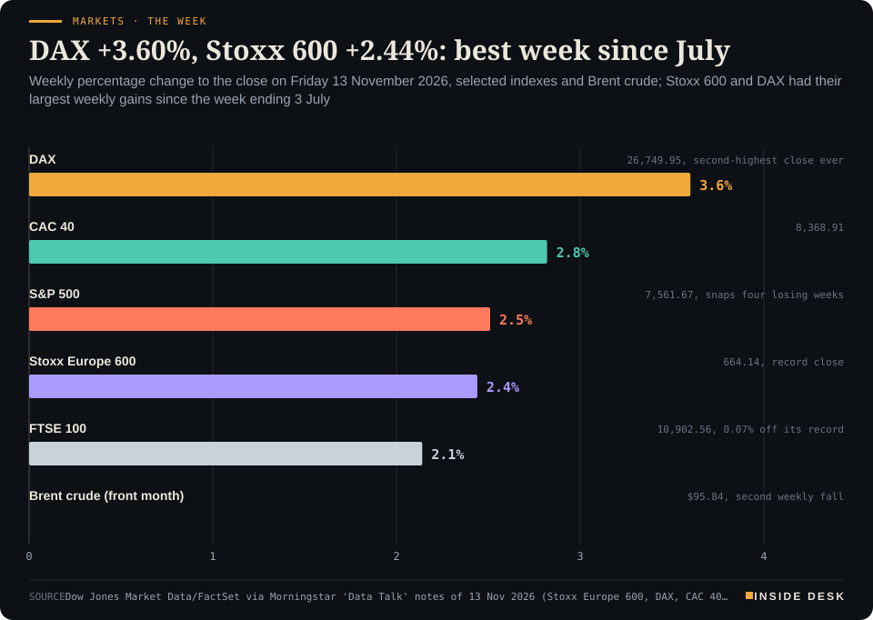
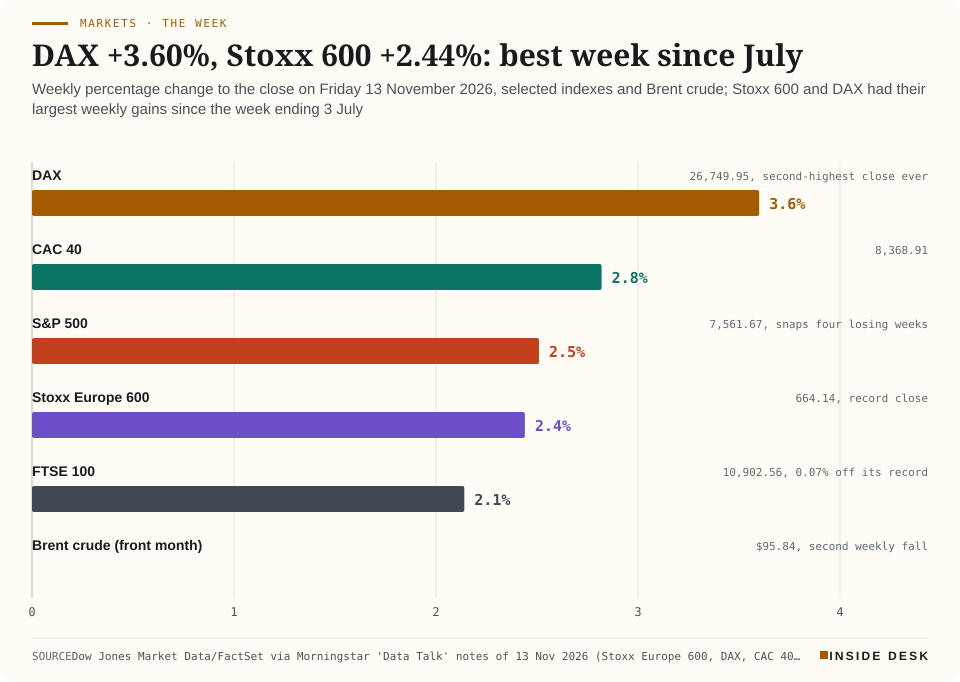
Bar chart of weekly percentage changes to Friday 13 November 2026: DAX up 3.60 percent, CAC 40 up 2.82, S&P 500 up 2.51, Stoxx Europe 600 up 2.44 to a record close of 664.14, FTSE 100 up 2.14, and Brent crude down 2.52 percent to $95.84 a barrel. Source: Dow Jones Market Data via Morningstar.
Source: Dow Jones Market Data/FactSet via Morningstar 'Data Talk' notes of 13 Nov 2026 (Stoxx Europe 600, DAX, CAC 40, FTSE 100, S&P 500 preliminary close, ICE Brent front-month settlement); retrieved 15 Nov 2026 · reported figures · CSV
The total, and what it is made of. Investing.com put Europe’s resilience down to a heavy weight in value and defensive sectors and a solid third-quarter earnings season, while Nvidia shares were heading for a weekly loss of about 11%8. Wall Street had a good week too: the S&P 500 rose 2.51% and broke a run of four losing weeks, but fell 0.40% on Friday9. Brent fell 2.52% to $95.84, its second weekly decline10, which takes some pressure off company costs8. The caution came from someone who was paid to give it: “Investors tend to assume that what has performed well will continue to do so. History shows that isn’t always the case,” said Sean Peche of Ranmore Fund Management8.
For you. Monday’s jump made the headlines possible, and the four quieter days kept them. A week of records built on invoices and earnings is sturdier than one built on a single name, but it is still a week. Nothing here is investment advice.
Desk comment A record is the day the market agreed with itself. The week is the five days it took to get there.
Markets & Macro · Short item · ePaper extra, added
Four losing weeks end, and the next week has two exams
The S&P 500 gained 2.51% and broke its losing run. Tuesday brings Nvidia's first results without its founder; Thursday, Anthropic's shares are expected to start trading.
The S&P 500 rose 184.81 points, or 2.51%, last week to 7,561.67, its largest weekly gain since early August, and snapped a four-week losing streak1. It is still 3.29% below its 6 October record, and up 10.46% this year1. Friday itself was a 0.40% fall, the second down day in a row1.
The calendar now sets two exams. Nvidia reports after the US close on Tuesday, its first results since Jensen Huang resigned as chief executive and board member on Thursday; interim chief executive Colette Kress will take the call2. “That’s a Nvidia question, not an AI question,” said Cullen Rogers of Wedbush Fund Advisers2. On Wednesday evening Anthropic is expected to price its listing, and to start trading on the Nasdaq on Thursday as “ANT”, selling 825 million shares at $70 to $78 each2. Desk arithmetic: that is roughly $58 billion to $64 billion of stock.
Underneath both sits the rate question. After Friday’s producer prices, futures put a 90% probability on a quarter-point Federal Reserve rise in December, up from 85% a day earlier, according to CME FedWatch as cited by Kiplinger2.
So you have one company’s invoice, one company’s price tag and one central bank’s arithmetic in four days. The week just gone proved the market can survive a headline. The coming one asks it to read the numbers. Nothing here is investment advice.
Appears only in the ePaper · Commentary for information only. Not advice.
Markets & Macro · Brief · ePaper extra, added
700 from Goldman, an upgrade from Citi: the brokers walk towards Europe
After its best week since July, the Stoxx 600 got a higher target and a better rating. Read them as opinions with letterheads.
Goldman Sachs raised its 12-month target for the Stoxx 600 to 700 points from 695, Reuters reported via Investing.com1. The index closed Friday at a record 664.143. Desk arithmetic: the new target sits about 5.4% above that close. Citigroup, after the sharp sell-off in technology shares, cut its recommendation on US stocks and on global tech, and raised it for European equities, which it sees as less dependent on the AI boom, Investiční web reports2. The Stoxx 600 is already up 12.15% this year3. A target is a forecast with a firm’s name on it, not a promise. Nothing here is investment advice.
Appears only in the ePaper · Commentary for information only. Not advice.
Politics & Institutions · 2 min read
€5.4 billion or €5.2 billion, and one Tuesday: the electricity tax goes to the coalition committee
The 2027 budget is settled without the chancellor's best-known promise. Over the weekend everyone repeated the promise. Nobody named the money.
The 2027 budget was agreed in the small hours of Friday. The electricity tax was not in it1. That gap ran through the whole weekend.
Friedrich Merz says the goal stands. He wants to cut the electricity tax to the European minimum, “from next year, in full”, as he put it on the edge of the EU meeting in Dublin, and he was due to address the CDU’s Schleswig-Holstein party conference in Neumünster on Saturday, where SPIEGEL expected him to have to say something about it1,2. Several minister-presidents of his party pressed for the cut as well, among them his host, Daniel Günther1,2.
The finance minister answers with a number. Lars Klingbeil says he is open in principle, but it needs “serious” counter-financing: the federal government would take in about €5.4 billion a year less1. DER SPIEGEL puts the sum needed at €5.2 billion2. Desk arithmetic: the two figures are €200 million apart, which is small next to the size of the hole and large next to anything already found to fill it. Even the Union’s own budget specialists doubt whether that money can still be found in the budget, SPIEGEL reports2.
The pressure inside the party is now on the record. A meeting of the Union’s parliamentary group on Wednesday turned into what SPIEGEL calls a reckoning, because the cut was left out of the deal with the SPD leaders, and the paper reports a “threat” from within the party’s own ranks to let the budget fail in the Bundestag at the end of November2. The decision is due at Tuesday’s coalition committee and could be added during the budget week1. The background is not getting easier: in the same overnight briefing SPIEGEL notes economists’ warnings of a severe budget crisis from 2028, after a 2027 budget shaped by record spending and more new debt2.
For you: the household gain depends on one dull document, the counter-financing table. A lower rate needs a matching line somewhere else, a cut, a levy or a reallocation, with a sum beside it. If Tuesday produces that line, the promise becomes a measure. If it produces only another statement of intent, the budget week will open with the same €5 billion question it closed on.
Desk comment A promise without a funding line is a press release. With one, it is a law.
Politics & Institutions · Short item · ePaper extra, added
"With all my strength": Hubertus Heil runs for the SPD chair, and the job description is the argument
The first official candidate for January's party conference wants the chair without a cabinet seat. That is a direct question to Lars Klingbeil.
Until Saturday the race for the SPD leadership had no runners. Then the former labour minister Hubertus Heil wrote to the party’s regional branches and executive: he will stand for one of the two chairs at the federal party conference in Bremen in mid-January, where the whole leadership is re-elected1.
The key sentence is about time, not policy. “That is why I want to devote myself with all my strength to a party chairmanship,” he writes (desk translation)1. The ARD capital studio reads it as aimed at Lars Klingbeil, who is party chair, finance minister and vice-chancellor at once1. A motion quoted by SPIEGEL and seen by ARD says the federal chair “may not, in the current situation, be held at the same time as a ministerial office” (desk translation)1.
The programme lines are familiar ground: families who can rely on their income, “affordable” living, respect for every kind of work, a “strong police”, continued support for Ukraine1. Klingbeil has not taken himself out of the race. Anke Rehlinger, Boris Pistorius and Matthias Miersch have ruled out running; Manuela Schwesig, seen as the strongest contender for the female co-chair, has left it open1.
For you: the real choice in Bremen is organisational. Should the person who runs the party also sign the budget? Both answers have costs. One chair with a ministry speaks with authority but little freedom. One without speaks freely but cannot deliver. Heil has picked his side of that trade.
39 seats against 32: Mecklenburg-Vorpommern signs a red-red-green coalition
SPD, Linke and Greens signed in Greifswald on Saturday evening. Schwesig stands for re-election on Monday.
SPD, Linke and Greens signed their coalition agreement for Mecklenburg-Vorpommern on Saturday evening at the Pomeranian State Museum in Greifswald, after all three party conferences approved it: unanimously at the SPD, with one abstention at the Greens1. The 133-page programme is titled “Zusammenhalt, Zuversicht, Zukunft”, cohesion, confidence, future1. Manuela Schwesig, head of government since 2017, wants to be re-elected in the Landtag on Monday; the coalition has 39 seats, the AfD, the only opposition party, 321. Desk arithmetic: a margin of seven seats. Three parties, one majority, and a 133-page contract to keep it together. In a state parliament that is the dull machinery doing its job.
Appears only in the ePaper · Commentary for information only. Not advice.
Psychology & Behaviour · 2 min read
The Annex: 390 adults, 144 minutes against 266, and a non-inferiority test that was not passed
A Norwegian trial of guided online therapy in routine primary care found similar recovery rates and far less therapist time. It also missed its own bar. Both facts are in the paper, so both are here.
The Annex reads the paper behind the headline. This week’s paper is a randomised trial from the Norwegian Institute of Public Health, published in Internet Interventions and led by Marit Knapstad and Otto Robert Smith1. The headline says online therapy cuts therapist time. It does. The paper says something more careful as well.
Clause one: the setting. 390 adults seeking help for anxiety or mild to moderate depression at six primary care services were randomised to guided internet-based cognitive behavioural therapy or to usual treatment at Prompt Mental Health Care, Norway’s service modelled on England’s NHS Talking Therapies1. In the usual-care group, 78 per cent received individual face-to-face therapy1. The trial ran from October 2021 to December 20231. This is routine care, not a university clinic with hand-picked volunteers, which makes it more useful and messier.
Clause two: the result. Both groups improved markedly over six months1. Recovery was 56.1 per cent online and 58.9 per cent in usual care1. That looks close. But the researchers had set a strict threshold for showing online therapy was not meaningfully worse, and it did not meet that standard for depression or anxiety scores1. Only about half of participants completed the six-month questionnaire, which cut the study’s statistical power1. “Not shown to be non-inferior” is not the same as “shown to be worse”. It means the trial could not rule it out.
Clause three: the clock. Online therapy used about 46 per cent less therapist time per client, roughly 144 minutes against 2661. Desk arithmetic: 122 minutes saved per client, so the therapist hours that serve one usual-care client would serve about 1.8 online clients. For a waiting list, that ratio is the story.
Clause four: the small print. Early dropout was higher online, 10.4 per cent against 6.1 per cent1. Therapists reported using fewer techniques such as exposure exercises online, which the authors think may have limited benefits for some anxiety conditions1. Among eligible people who declined to join, 53 per cent said they did not want internet treatment, and fewer than one in five participants named it as their preferred option1. Wellbeing, social anxiety, sleep and physical activity were judged no worse online1.
For you. The authors conclude that guided online therapy should sit alongside traditional options, not replace them, and estimate it could suit at least half of primary care clients1. If you are offered it, it is a real treatment with a real therapist behind it. If you are offered only it and you have strong anxiety, it is fair to ask about exposure work, or for the face-to-face route. The trial gives you the words for that conversation.
Desk comment A trial that reports its own miss is worth more than ten that report only their hits.
Psychology & Behaviour · Short item · ePaper extra, added
80 per cent of your maximum, or 20: two kinds of lifting, and both helped
An Irish trial of weight training for young women with high worry found large drops in depressive symptoms in both arms. The difference between the arms was not confirmed.
Researchers at the University of Limerick randomised 55 young women, average age about 22, who screened for analogue generalised anxiety disorder, a level of worry that meets questionnaire thresholds rather than a clinical diagnosis1. For eight weeks, after two weeks of familiarisation, one group lifted at 70 to 80 per cent of their one-repetition maximum, two sets of 8 to 12 repetitions of eight exercises, following WHO and American College of Sports Medicine guidelines1. The other did a “sham” version at 20 per cent1. The study appears in the Journal of Affective Disorders, publication dated 15 November1.
The headline finding is a non-finding. There was no significant difference between the groups over time (p = 0.806)1. Both, however, saw large reductions in depressive symptoms, still present at one-month follow-up1. The within-group effect was larger in the heavier-lifting arm (standardised mean difference 1.53) than in the light arm (1.04), which the authors read as a hint of greater benefit, while saying the difference was “unconfirmed”1.
Read it for what it is: a small trial, a sham that was itself exercise, and no group that did nothing. That design cannot tell you how much of the improvement came from lifting, from attention, or from time passing. It can tell you that a structured, supervised routine, even a light one, coincided with lower symptoms in young women who worry a great deal1.
If you have been put off strength training because you think it has to be heavy to count, this paper is mild encouragement to start light.
Twice what parents see: what young people report when asked directly
A US tracker finds a gap between children's symptoms and parents' perception.
New research from the Ad Council and Surgo Health finds that twice as many young people report symptoms of depression or anxiety as their parents may recognise1. “When we ask young people directly, they tell us things even attentive parents can miss,” said Surgo Health chief executive Sema Sgaier1. Her tracker also asks what helps: time with friends, being active, getting outside, creative outlets1. The release comes with a campaign, and the campaign’s own figure is modest: parents aware of it were more likely to feel strongly confident about such conversations, 44 per cent against 30 per cent1. The advice is cheaper than any app. Ask, then listen longer than feels comfortable.
Appears only in the ePaper · Commentary for information only. Not advice.
Energy & Industry · 2 min read
€351.48 to €139.70: the week the wind arrived and the gas plants stepped back
Germany's day-ahead power price fell by three fifths from Tuesday's record to Sunday. The generation figures show who took over the shift.
Sunday’s electricity in Germany and Luxembourg was bought on Saturday at an average of €139.70 per megawatt hour, the cheapest delivery day of the week1. The week began at €345.64 on Monday and set a record of €351.48 on Tuesday1. Desk arithmetic: from Tuesday to Sunday the daily average fell by €211.78, or about 60%. Against the previous Sunday, 8 November, at €242.13, it is €102.43 lower1.
Energy · PowerSunday €139.70, the week's cheapest dayGermany/Luxembourg day-ahead price, daily average by delivery day, € per MWh; week of 9 Nov from a record €351.48 on Tuesday to €139.70 on Sunday
Line chart of the daily average German-Luxembourg day-ahead electricity price from 1 September to 15 November 2026, in euros per megawatt hour. In the week from Monday 9 November it reads €345.64 on Monday, a record €351.48 on Tuesday, €316.65 on Wednesday, €199.05 on Thursday, €161.74 on Friday and €197.72 on Saturday. The latest value is €139.70 for delivery on Sunday 15 November, the lowest of the week, €58.02 below Saturday and €102.43 below the previous Sunday, 8 November, at €242.13.
Source: Bundesnetzagentur | SMARD.de day-ahead DE-LU daily averages of hourly prices, delivery days 1 Sep to 15 Nov 2026 (Sunday 15 Nov €139.70, auction of 14 Nov), retrieved 15 Nov 2026, 09:20 CET · CC BY 4.0 · CSV
The shape of a cheap Sunday. The dearest hour on Sunday is 17:00, at €178.12, as lights come on and the sun is gone; the cheapest is 12:00, at €99.791. No hour clears below €99, so this is a cheaper day, not a giveaway one. The pattern is the familiar winter one: a dip at midday, a hump in the early evening1.
Who took the shift. SMARD’s generation data tell the story better than any commentary. On Tuesday, wind turbines on land and at sea together produced about 101 GWh; on Friday, about 791 GWh, and on Saturday about 532 GWh2. Gas-fired plants produced about 418 GWh on Tuesday and about 183 GWh on Saturday2. Desk arithmetic: Friday’s wind output was nearly eight times Tuesday’s, and Saturday’s gas output was 56% below Tuesday’s. The expensive marginal plant had less to do, and the price followed.
Demand helped, quietly. Consumption was about 1,518 GWh on Wednesday and about 1,260 GWh on Saturday, a weekend drop of roughly 17%2. Desk arithmetic: the seven delivery days from Monday to Sunday averaged about €244.57, against about €256.59 for the seven days to 8 November1. A record on Tuesday and the cheapest day on Sunday add up to a week only a little cheaper than the last.
For you. If you are on a dynamic tariff, this week was a lesson in timing rather than luck: the same kilowatt hour cost very different amounts on Tuesday evening and Sunday lunchtime. If you are on a fixed tariff, the record and the slump both passed through someone else’s books. Either way, the price you will see next year is built from weeks like this, averaged by the dull machinery of procurement. Nothing here is investment advice.
Desk comment A price is a weather report written by accountants. This week the wind dictated and the gas plants took notes.
Energy & Industry · Short item · ePaper extra, added
$21.80 in two weeks: from fear of shortage to fear of surplus
Brent fell 2.52% last week and 18.53% over two, its steepest two-week dollar fall since October 2008. The shipping risk has not gone; the pricing of it has changed.
Brent crude for January delivery settled at $95.84 a barrel on Friday, down $2.48, or 2.52%, on the week1. Over two weeks it lost $21.80, or 18.53%: the largest two-week fall in dollars since the week ending 10 October 2008, and the largest in percentage terms since April 20201. It is 19.02% below its 2026 high of $118.35, set on 31 March, and still 57.50% higher than at the start of the year1.
The week itself was not a straight line. Brent rose for three sessions in a row to Friday, adding $4.35, after Houthi claims of attacks on Saudi facilities and reports of tankers hit in the Strait of Hormuz1,2. Yet the weekly total still pointed down, as an International Energy Agency report pointed to a rising global surplus and US crude and fuel inventories rose2.
“It’s clear the biggest fear a few months ago was a fear of shortage,” said Phil Flynn of the Price Futures Group. “Now it looks like the biggest fear is a surplus”2. Andrew Lipow of Lipow Oil Associates described a market “torn” between more supply from the Middle East and unchanged negotiating positions between Washington and Tehran2.
For you the useful number is not the swing but the level: oil at about $96 is cheaper than a fortnight ago and far dearer than in January1. Heating oil and diesel bills follow the level, with a lag. Don’t budget on the swing. Nothing here is investment advice.
Appears only in the ePaper · Commentary for information only. Not advice.
Energy & Industry · Brief · ePaper extra, added
€87.99 a tonne for carbon, and lignite's quieter Friday
The price of a carbon permit rose on the week while Germany burned less brown coal. Both belong in the same ledger.
EU carbon permits on ICE fell 2.64% on Friday to €87.99 a tonne, but ended the week 1.66% higher, insigtX reported1. Each permit covers a tonne of CO2, so it is a running cost for every coal and gas plant in the system. In Germany, lignite plants produced about 316 GWh on Tuesday and about 188 GWh on Friday, as the wind picked up, SMARD’s provisional data show; hard-coal output fell from about 136 GWh on Wednesday to about 66 GWh on Saturday2. Desk arithmetic: lignite output on Friday was about 40% below Tuesday’s. The permit price rose; the plants that need permits most ran less. That is the mechanism working as designed. Nothing here is investment advice.
Appears only in the ePaper · Commentary for information only. Not advice.
Money, FX & Committees · 2 min read
Podium vs Print: "highly probable" and a quarter with no new jobs
On Friday the Bundesbank president said the ECB will probably have to raise rates again. Hours earlier, Eurostat counted the euro area's workers and found none added in three months.
Podium
“If the situation stays as it is, it seems highly probable that we'll have to act again.”
Joachim Nagel, President of the Deutsche Bundesbank and member of the ECB Governing Council, keynote at the 79th Siemens Bankers Conference in Munich, Friday 13 November 2026
Print0.0%
Euro-area employment unchanged on the quarter in July to September, after +0.1%; GDP +0.4%, with France at -0.1% and Italy at 0.0%.
Eurostat, flash estimate of euro-area GDP and employment, Friday 13 November 2026
The podium. In Munich on Friday, Bundesbank President Joachim Nagel set out the case plainly. Euro-area inflation stood at about 2% when the year began and is now at 4%, he said; oil costs around a third more than before the Iran war began, European gas almost three times as much1. The ECB raised rates in June and September and held at 2.5% two weeks ago1. Then the line that moved the wires: “If the situation stays as it is, it seems highly probable that we’ll have to act again”1,3. In Riga on Wednesday he had said “we will do what is necessary again”4; on Friday he put a probability on it.
The print. On the same day Eurostat published its second look at the third quarter. Euro-area GDP rose 0.4% on the quarter, after 0.6% in the spring, and 1.3% on the year2. Employment was unchanged on the quarter, after rising 0.1% in each of the three quarters before2. France’s output fell 0.1%, Italy’s was flat, Germany’s grew 0.2%; Spain grew 0.6%2. The United States, for comparison, grew 0.8%2.
The gap. It is real, but it is not a contradiction. Nagel did not hide the print: “So far, the economy has proved resilient,” he said, citing the same 0.4%1. His argument is that higher policy rates “won’t produce more oil or gas”, but can stop energy prices feeding into wages and price-setting1. He also said underlying inflation and wage growth have so far been “broadly stable”1. Desk arithmetic: put the two together and the ECB is weighing a hike against an economy whose second- and third-largest members, France and Italy, produced no growth between them last quarter2.
What the print does not say. A flat head count is not a falling one; year on year, employment is still up 0.4%2. And the flash covers states making up 97% of euro-area output, with revisions due on 7 December2. It is a reading, not a verdict.
For you. The podium tells you where the rate on your next loan or deposit is more likely to go. The print tells you how many new payslips there were to pay it: in the euro area last quarter, net, none. Keep both on your page. Nothing here is investment advice.
Desk comment A rate is set for prices. It is paid by payrolls. Read both before you applaud either.
Money, FX & Committees · Short item · ePaper extra, added
44% on goods, 110% on services: the tariffs Europe charges itself
Washington's tariffs make the news. The Bundesbank president spent part of Friday on the barriers nobody has to announce, because they are already at home.
Most of Friday’s attention went to what Joachim Nagel said about interest rates. The longer half of his Munich speech was about something duller and, for your income, possibly bigger: the cost of selling across Europe’s own borders1.
The outside pressure first. By the Bundesbank’s estimates, the average US tariff rate has risen from 2.3% in 2024 to almost 12%, a level last seen in the early 1940s1. The United States and China together take roughly one in every seven euros of Germany’s goods exports1.
Then the inside. Nagel cited an IMF study estimating the cost of trading across EU borders as equivalent to tariffs of around 44% on goods and 110% on services1. “Those are barriers we impose on ourselves,” he said. “And they are ours to remove”1. He listed the plumbing: nine member states still miss the 10% electricity-interconnection target set for 2020; three non-European providers hold more than 70% of Europe’s cloud market; Europe hosts an estimated 5% of the world’s AI computing capacity against almost 80% in the US1.
There is some progress. The securitisation reform reached political agreement last month, the first under the Savings and Investments Union, and once all trade deals are in force preferential agreements could cover more than half of the EU’s external trade, up from around 46% at the end of 20251.
None of this needs a summit. It needs regulators, grid operators and lawyers to finish paperwork. That is unglamorous work, and it is the cheapest growth on offer. Nothing here is investment advice.
Appears only in the ePaper · Commentary for information only. Not advice.
Money, FX & Committees · Brief · ePaper extra, added
€17.3 billion in, €5.5 billion out: Germany's China ledger in September
A record export month hides a lopsided line. Read the table, not the total.
German exports rose 2.0% in September to €141.1 billion, calendar and seasonally adjusted, and imports 4.2% to €125.5 billion, leaving a surplus of €15.6 billion, Destatis reported1. The table underneath is less tidy. Exports to China fell 5.2% on the month to €5.5 billion, while imports from China rose 1.6% to €17.3 billion, making it Germany’s largest source of imports1. Desk arithmetic: Germany bought about €3.15 of Chinese goods for every euro it sold there, an €11.8 billion gap in one month. The United States remained the largest buyer, at €13.4 billion1. The single market did the heavy lifting: €80.8 billion of exports went to EU countries, up 3.5%1. Nothing here is investment advice.
Appears only in the ePaper · Commentary for information only. Not advice.
Ordinary & Inherited Life · 2 min read
Ordinary Ledger: €262 for presents, €1 less than last year, and a 2% that is mostly prices
Six weeks before Christmas, the retailers' own survey says you will spend almost exactly what you spent last year. The interesting figures are the ones underneath: who is cutting, who is not, and where the money goes.
The Ordinary Ledger takes the week’s big numbers and turns them into lines on a household budget. This Sunday the big number is small, and that is the news: on average you plan to spend €262 on Christmas presents this year, against €263 last year, according to a survey of more than 2,000 people by the Handelsblatt Research Institute for the retail association HDE1.
Who is cutting. More than half of people plan to spend the same as last year, 10% plan to spend more and 24% plan to spend less1. Desk arithmetic: cutters outnumber spenders by more than two to one, and the average still barely moves. That is what a stable budget looks like from the inside: a minority tightening, a smaller minority loosening, and most people buying roughly the same list for roughly the same people.
What the shops expect. The retailers are gloomier than their customers. In a separate HDE survey of 300 retail companies, 56% of non-food retailers expect a worse or much worse Christmas than last year1. Still, the association forecasts nominal sales up 2% in November and December, to €129.2 billion in total1. HDE president Alexander von Preen said customers “sind in Weihnachtsstimmung” (are in the Christmas mood) and are planning stable spending on presents1.
Note the word nominal. A 2% rise in euros, with a flat present budget per person, is not a story of more parcels under the tree. It is mostly a story of prices: of energy, staff and, in the HDE’s own words, “ausufernder Bürokratie” (runaway bureaucracy) on the retailers’ side of the counter1.
Where the money goes. Online is the growth line. The HDE expects online Christmas sales to rise 4.1% to €23.1 billion1. Desk arithmetic: that is about 18% of the €129.2 billion forecast for the two months, and it is growing twice as fast as the whole.
What you can do with this. The ledger’s advice is not to spend less or more. It is to write the number down. A budget of €262 that you set in November and check in December is a decision; a budget that you discover on your card statement in January is an accident. If you are among the 24% who plan to cut, the cheapest way is the oldest: fewer, better presents, bought before the last weekend, when the choice is wider and the delivery promise firmer.
The bottom line. The national Christmas is forecast to be 2% bigger in euros. Yours, on average, is €1 smaller. Both can be true, and the gap between them is the season’s price list.
Desk comment €262 against €263 is neither a boom nor a bust. It is a household that kept its list.
Ordinary & Inherited Life · Short item · ePaper extra, added
€14.60 an hour and €633 a month: the payslip lines that change on 1 January
Not every New Year letter is a price rise. The minimum wage goes up by law, and the mini-job ceiling follows it automatically.
This week’s ledgers were full of 1 January letters about gas, power and parcels. Here is a 1 January line that runs the other way. The statutory minimum wage rises from €13.90 to €14.60 gross an hour on 1 January 2027, as set in the fifth minimum-wage adjustment regulation1.
Because the mini-job ceiling is tied to the minimum wage, it moves too, without anyone having to vote on it again. The rule since October 2022 is ten hours a week at the minimum wage: multiply the hourly rate by 130, divide by three and round up to a full euro2. That takes the ceiling from €603 to €633 a month, or €7,596 a year, up from €7,2362. The midijob band now starts at €633.01 and still ends at €2,000 a month2.
Desk arithmetic: €14.60 is €0.70, or about 5.0%, more an hour than €13.90. For a full-time job of 40 hours a week, using the same 130-over-three formula scaled up (about 173.3 hours a month), that is roughly €2,531 gross a month, about €121 more than this year.
For you, two checks. If you employ a cleaner, a carer or a helper on a mini-job, the hourly rate must rise on 1 January, and the hours that fit under €633 are still capped at about ten a week2. If you hold a mini-job yourself, an occasional unforeseen overrun is allowed in no more than two calendar months a year2. A pay rise written into a regulation is the dullest kind of good news. It also arrives on time.
Appears only in the ePaper · Commentary for information only. Not advice.
Ordinary & Inherited Life · Brief · ePaper extra, added
Eight cents off since 1 November, and still the year's second-dearest month
Heating oil is drifting away from October's high. The monthly average has not caught up.
The week in the cellar tank: by Friday morning heating oil cost a little over €1.65 a litre on the German average, back where it had been on Thursday morning after a dip to just over €1.64 on Thursday evening, HeizOel24 reported1. Since the start of November prices have fallen by about eight cents a litre1. Yet the November average so far is just under €1.69, making it the second-dearest month of the year to date1. Desk arithmetic: on a 3,000-litre order, eight cents is about €240. Even in one morning the spread was wide: Bremen up just over three cents, Thuringia down almost 0.8 cents1. Compare quotes before you compare headlines.
Appears only in the ePaper · Commentary for information only. Not advice.
Tech & Compute · Short item · ePaper extra, added
$26 billion from its own suppliers: the line in Anthropic's IPO worth reading twice
Seven chip and cloud companies have agreed to buy Anthropic shares at the offering price. In a week when AI money was nervous, that is the clause that tells you who is underwriting whom.
Anthropic is offering 825 million Class A shares at $70 to $78 each, of which 801,351,354 are new shares and the rest are sold by existing holders, and it has applied to list on Nasdaq as “ANT”2. People familiar with the plan told CNBC it intends to price on 18 November and trade on 19 November, with about 20% of the shares aimed at retail investors, against a typical 5% to 10%1.
The headline number is the valuation: up to $1.405 trillion fully diluted at the top of the range, up from $965 billion in a May funding round1. The more useful number sits a paragraph lower. AMD, Broadcom, Google, Micron, Microsoft, Nvidia and TSMC have agreed to buy $26 billion of Class N stock in a private placement at the IPO price, shares that will not be subject to underwriters’ lock-ups1.
Read that list again: several of these names make the chips, memory and cloud capacity that AI labs run on. That is not sinister; suppliers have financed their customers for as long as there have been invoices. But it means part of this deal is a supply chain buying a seat at its customer’s table, in the same month that the AI trade was being repriced.
The filing’s own figures are the other half of the story: $33.24 billion of revenue in the nine months to September, and a $104 billion net loss, most of it from fair-value changes on convertible notes and derivatives1. Run-rate revenue was about $81 billion at the end of October1. Price the revenue, footnote the loss. Nothing here is investment advice.
Appears only in the ePaper · Commentary for information only. Not advice.
Tech & Compute · Brief · ePaper extra, added
27 approved, 13 defeated: the data-centre ballots, counted
Before the AI trade had its bad week, American voters had already filed their objections, measure by measure.
On 3 November, US voters approved 27 local measures limiting or opposing data-centre development and defeated 13 that favoured it, Ballotpedia counts1. The approved list includes five full bans, twelve partial bans and three six-month moratoriums, all of the moratoriums in Maine1. In Perry, Ohio, hyperscale developers seeking certain tax incentives must now provide financial guarantees to the community1. The only exception among 41 contests was Harwood, North Dakota, where voters rejected a review requirement1. Six earlier local votes also went against development, and three more come in December, in Clarksville, Arkansas, and Mandan, North Dakota1. Compute is a product; a site is a negotiation.
Appears only in the ePaper · Commentary for information only. Not advice.
Health & Care · 2 min read
252 million who do not know, and 89,000 diagnoses a day: World Diabetes Day counts the gap
The diabetes numbers this week were not about a cure. They were about a blood test that never happens, and the clinic that would have to do it.
World Diabetes Day fell on Saturday, and the most useful figure published around it was not about a new drug. The International Diabetes Federation’s Atlas estimates that 589 million adults aged 20 to 79 were living with diabetes in 2024, and that about 43 per cent of them, or 252 million, did not know it1. Nearly nine in ten of those undiagnosed live in low- and middle-income countries1.
The target is clear and dull, which is a compliment. WHO member states have agreed that at least 80 per cent of people with diabetes should be diagnosed by 20302. The IDF puts today’s share at 57 per cent1. Its preliminary analysis says about 134 million additional diagnoses would be needed, roughly 89,000 every day from this World Diabetes Day to the end of 20301. That is not a research problem. It is an appointments problem.
The IDF’s new survey shows where the queue forms. It asked 2,411 adults aged 25 to 64 in Brazil, India, Kenya, Saudi Arabia, Spain and the United States, all with known risk factors and no diagnosis1. 84 per cent agreed a risk check was worthwhile; only 15 per cent thought they were likely to develop type 2 diabetes1. 67 per cent wrongly believed pre-diabetes usually comes with noticeable symptoms1. Fear of the result was the most cited barrier at 28 per cent, cost at 26 per cent, getting an appointment at 20 per cent1. The IDF itself warns these samples are not nationally representative1.
Across the Americas, PAHO counts 112 million adults with diabetes, about 13 per cent of the adult population, and 43 million people aged 30 and older with diabetes who receive no treatment2. “We need to strengthen primary health care to detect the disease as early as possible,” said PAHO director Jarbas Barbosa2. Note the order in his sentence: detection, then care. A diagnosis without follow-up is a letter nobody answers.
The bill is already being paid. The IDF estimates diabetes-related health spending exceeded US$1 trillion worldwide in 20241. Complications such as kidney failure, heart disease and vision loss are, in the IDF’s framing, what late diagnosis buys1.
What would help is mostly unglamorous. In the survey, 46 per cent said they would welcome walk-in checks at pharmacies or supermarkets, 38 per cent evening or weekend appointments, and about one in four a personal invitation explaining how to get checked1. If you have a risk factor, you need not wait for an invitation: a check is the cheapest piece of medicine on offer. “We cannot close the diagnosis gap if the people most in need of testing don’t know their own risk factors,” said IDF president Peter Schwarz1.
Desk comment A disease you have not been told about still sends its invoice. It just sends it later.
64% against 45% at two years: a bladder cancer regimen for patients who cannot take cisplatin
The FDA approved a new perioperative combination this week. The trial is strong, and its side-effect line deserves the same attention as its headline.
On Friday the US Food and Drug Administration approved durvalumab (Imfinzi) with enfortumab vedotin before surgery, followed by durvalumab alone after bladder removal, for adults with muscle-invasive bladder cancer who cannot take or have refused cisplatin chemotherapy1. Up to half of such patients are ineligible for cisplatin, often because of kidney function, and for them the standard has been surgery alone1.
The evidence comes from the VOLGA phase III trial, which randomised 695 patients at 182 centres in 25 countries1. In a planned interim analysis, the combination cut the risk of recurrence, progression, missed surgery or death by 49 per cent against the comparator (hazard ratio 0.51)1. An estimated 64 per cent were alive and event-free at two years, against 45 per cent1. The risk of death fell by 42 per cent; 78 per cent were alive at two years, against 69 per cent1.
Now the other column. Grade 3 and 4 adverse events of any cause occurred in 64 per cent of patients on the combination and 44 per cent in the comparator arm1. Patient-reported quality of life was maintained after surgery, the company says1. Desk arithmetic: that is 20 points more serious side effects for 19 points more patients alive and event-free at two years. Both numbers belong in the conversation between patient and oncologist.
The source is the manufacturer’s release, and the trial lead quoted has disclosed financial interests related to AstraZeneca1. Applications are under review in the EU and Japan1. A good trial is the start of a decision, not the end of one.
Appears only in the ePaper · Commentary for information only. Not advice.
Health & Care · Brief · ePaper extra, added
€522 million was enough for October. November needs the second loan
Germany's care insurance draws on its extra federal loan for the first time.
Germany’s long-term care insurance will draw money from an additional federal loan for the first time this month, the health ministry told dpa; the amount is not yet fixed1. October was covered by €522 million left over from the original €3.2 billion loan for 20261. The Bundestag budget committee approved up to €700 million more in early October, paid out month by month as needed1. The reason is plain: spending rose faster than assumed because the number of people needing care keeps growing1. For 2027, minister Carsten Linnemann’s savings package is meant to raise €6.25 billion against an expected €7.6 billion shortfall1. Desk arithmetic: that leaves about €1.35 billion uncovered. The care commission reports by the end of January1.
Appears only in the ePaper · Commentary for information only. Not advice.
Security & Order · 2 min read
"Cannot and do not want to set conditions": Moscow lets Europe pick its own chair
In 24 hours the Kremlin went from asking what Europe could contribute to saying it would not choose Europe's negotiators. The table is bigger. The demands on it are not smaller.
On Friday the Kremlin’s line on a European delegation came with a condition attached. On Saturday it came without one. “We cannot and do not want to set conditions for their negotiating team. This is a completely wrong way to put it,” Kremlin spokesman Dmitry Peskov told Russian media1. Euronews reads it as the first signal that Moscow would not oppose European representatives at the table, after months of saying they had “no business” there1. Peskov still wants to talk to the Europeans first, to see “to what extent their position could potentially contribute”1.
The chair now has names on it. EU leaders agreed on Friday that Europe would be represented by Britain, France, Germany, Italy, Poland and the bloc’s institutions1. Those five countries have also signalled readiness to send troops to a “coalition of the willing” in the event of a ceasefire3, which is exactly why their presence matters to Moscow and why it was so long refused.
Washington’s envoys have changed job description. “Our focus now is on facilitating direct engagement between Moscow and European partners and preparing the agenda for the next round of trilateral talks,” Jared Kushner wrote on Saturday, after he and Steve Witkoff had met Zelensky and Putin separately following two days in Abu Dhabi without a ceasefire breakthrough2. He called NATO a “critical pillar” of European security and of “credible” guarantees for Ukraine2. Emmanuel Macron, in a long post the same day, said Europe must “state clearly” what it wants for the post-war period, “including to the Russians”3.
Now the part a friendlier tone does not change. The Washington Post, citing Russian negotiating points it obtained, reports that in this week’s talks Russia “returned to hard-line ultimatums” it had issued to NATO and the United States before the 2022 invasion4. A softer voice on who sits down is not a softer position on what is signed.
For you: watch the paperwork, not the adjectives. A Europe-Moscow meeting will need a venue, a date, a written agenda and a list of who speaks for whom. Until those exist, Saturday was a change in tone; when they exist, it becomes a change in the process.
Desk comment A seat is a courtesy. An agenda is a commitment. Count the second.
Security & Order · Short item · ePaper extra, added
25 seafarers, 136 incidents: the UN counts the cost of Hormuz
October was the worst month for shipping incidents since the war began. On Saturday, Iran said three more tankers had hit mines.
Wars are counted in missiles and ministers. The UN counted crews. At least 25 seafarers have been killed in and around the Strait of Hormuz since the war on Iran began in February, assistant secretary-general Khaled Khiari told the Security Council on Friday, with figures running to 11 November1. “This situation cannot be allowed to become the new normal,” he said1.
The International Maritime Organization tracked 136 security incidents involving vessels in Hormuz and the wider Middle East between 1 March and 11 November: 35 of them in October, the highest monthly tally since the conflict began, and 10 in the first eleven days of November1. Desk arithmetic: the other 91 incidents were spread over the seven months from March to September, 13 a month, so October ran at about 2.7 times that pace.
The weekend added more. Iranian authorities said on Saturday that three oil tankers had hit mines and caught fire in “unauthorised” or “restricted” areas of the strait; Iran’s navy warned that any “offending tanker” in the restricted area east of the strait “will be set on fire by hitting naval mines”1. The US military says it has cleared the main routes and that the waterway is open1. UKMTO puts shipping at about 65 per cent below pre-war levels1.
Khiari named the bill: higher energy, transport and insurance costs, and “severely constrained” fertiliser shipments1. Somebody signs on to these ships every week. The insurance premium is the price of that decision, written down.
Appears only in the ePaper · Commentary for information only. Not advice.
Security & Order · Brief · ePaper extra, added
"The first time this issue had been raised": Donbas for NATO, as a question
Zelensky says US negotiators asked what Kyiv would do if NATO membership were on offer.
“The Americans raised the question: ‘What if Ukraine joins NATO? Would Ukraine withdraw from Donbas?’” President Zelensky told journalists on Friday, describing the Abu Dhabi talks. “This was the first time this issue had been raised”1. Donbas, Donetsk and Luhansk oblasts, has been partly occupied since 2014 and Russian forces have not managed to capture all of it1. US envoy Jared Kushner said on Saturday that “several new ideas” had emerged and were being explored, some of which “may lead to breakthroughs directly”1. A question is not an offer, and an offer is not a ratified accession. Keep the three apart.
Appears only in the ePaper · Commentary for information only. Not advice.
Climate & Weather · 2 min read
Not a draft, they stress: Antalya's list of wishes goes into the rest day
COP31 pauses on Sunday with a presidency summary on the table and a fight over whether there should be a final political text at all. Monday is when paper replaces reflections.
Sunday is the rest day in Antalya, and the delegates go into it holding a document that insists on what it is not. On Friday the COP31 presidencies, Türkiye as host and Australia steering the negotiations, published a “summary of reflections” on a possible cover decision1. The presidency stressed that it is “not intended to reflect consensus, nor the strength or prevalence of views expressed”1. It does not say which country proposed what1. Read it as an inventory, not an invoice.
The inventory is interesting. It includes the “transition away from fossil fuels in energy systems”, the wording agreed at COP28 in Dubai and missing from the final decisions in Baku and Belém1. It floats efforts to limit the “magnitude and duration” of warming beyond 1.5°C, raising electricity’s share of final energy use to 35 per cent by 2035, and welcoming roadmaps on moving away from fossil fuels and on halting deforestation1. A list is cheap. What matters is which lines survive a text that needs the consent of every country present1.
The deeper argument is whether there should be a cover decision at all. Some large emerging economies say it is being pushed by the presidencies rather than by parties; Russia and the Arab Group are among those who say there is no mandate for one1. The European Union has warned there is little political appetite for new funding pledges in Antalya1. “The big question is what can survive that test of opposition,” said Alden Meyer of E3G1.
There is also a quieter dispute about the calendar of science. Some countries want the next major IPCC assessment ready for the global review of progress in 2028; Saudi Arabia, India and China have argued for 2029, saying more time is needed to include research from developing countries1. That sounds procedural because it is. Procedures decide what evidence is on the table when the stocktake begins.
On Saturday UN climate chief Simon Stiell urged countries to move swiftly towards agreement, and COP31 President of Negotiations Chris Bowen said a first draft of the overarching agreement is expected early next week2. The conference is due to end on 20 November, though these talks often overrun1.
For you, the useful habit this week is to ignore the adjectives and compare drafts. On Monday or soon after there should be a text with brackets in it1,2. The brackets are where the negotiation actually lives.
Desk comment Conferences are remembered for their speeches and judged by their footnotes.
Climate & Weather · Short item · ePaper extra, added
69%, then 61%, then 'equally likely': the honest footnote in Germany's winter outlook
The DWD leans mild for the early winter and then tells you, in its own words, how little to trust the rest.
Most seasonal outlooks are sold on their headline. Germany’s weather service sells its own on the caveats, which is why it is worth reading. The DWD’s seasonal climate outlook, dated 19 October and covering November to March, sees a “moderate tendency” of 69 per cent for a warmer early winter, November to January, than the 1991–2020 average1. Warmer here means a three-month mean above 3.2°C, and the DWD rates the forecast quality for that period as relatively good1.
Then the confidence falls away. For December to February it gives 61 per cent for a warmer winter (above 2.0°C), and for January to March 64 per cent (above 2.8°C)1. For both, it rates forecast quality as low and recommends using the observed climate instead: colder, normal and warmer treated as equally likely1. That is a public agency telling you its model is not better than history for those months. Few institutions print that sentence.
The context is in the same document. Last year’s observed early winter was normal at 2.4°C, the winter normal at 1.7°C1. The WMO multi-model ensemble broadly confirms the DWD picture, with somewhat higher warm probabilities in the south and west, partly because it compares against a shorter, colder reference period1. The DWD’s statistically selected runs point to slightly colder conditions in mid and late winter than the full ensemble1.
What to do with it: nothing dramatic. A mild lean for the next weeks is not a promise for February, and the outlook says so itself1. Keep the boiler serviced and the gas bill budgeted for a normal winter.
Appears only in the ePaper · Commentary for information only. Not advice.
Climate & Weather · Brief · ePaper extra, added
2,734 houses under water, and a coffee belt that kept picking
Central Vietnam's floods, and why the robusta price barely moved.
Prolonged rain in central Vietnam left 2,734 houses inundated in Gia Lai and Dak Lak as of 17:00 local time (11:00 CET) on 12 November, and 1,887 households were evacuated from flood and landslide risk areas from Thanh Hoa to Dak Lak1. Parts of Dak Lak saw 80 to 200 mm in a day, some places more than 300 mm; two people were injured in Hue1. Inland, the Central Highlands coffee belt had only light rain, traders told Reuters, and harvesting continued, if slowly2. Farmers sold beans at 83,200 to 83,800 dong a kilo, against 83,000 to 84,000 a week earlier2. “We probably won’t see significant volumes reaching the market until next month,” one trader said2. Weather news and price news are not always the same story.